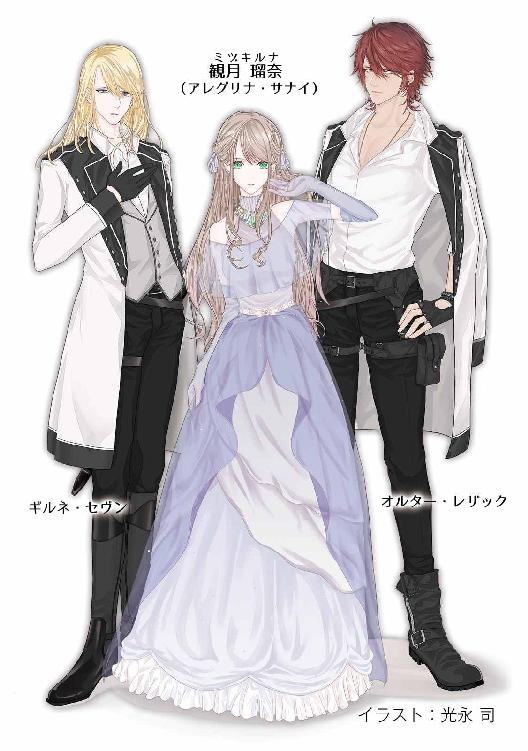

| 月華伝 2巻 月KA伝シリーズ | |
| 御木 宏美 | |
| クリーク・アンド・リバー社 (2018) | |

月華伝 ２巻
～月KA伝シリーズ１～
御木 宏美
本作品の全部または一部を無断で複製、転載、配信、送信したり、ホームページ上に転載したりすることを禁止します。また、本作品の内容を無断で改変、改ざん等を行うことも禁止します。
本作品購入時にご承諾いただいた規約により、有償・無償にかかわらず本作品を第三者に譲渡することはできません。
本作品を示すサムネイルなどのイメージ画像は、再ダウンロード時に予告なく変更される場合があります。
本作品は縦書きでレイアウトされています。
また、ご覧になるリーディングシステムにより、表示の差が認められることがあります。
月華伝
四章
１
翌朝から幌馬車での旅が始まった。
「異世界へお渡りになられた経緯についてご理解いただかねばなりません」
ルナを抱いて寝台に腰かけた瑠奈に向かい、絨毯の上に座り込んだギルネが言った。
「まず──あちらの世界でもそれぞれの国や民族で違う神を信仰しているそうですが、こちらの世界も同様です。大きく分けて世界は三つに分かれます。月神シャーを崇めている月族、太陽神ラーンを崇めている陽族、そして精霊なるものを信じる蛮族がいます。その中でもっとも尊き神がシャーであらせられます。シャーはこの世の唯一の神にして、万物をお創りあそばした創主。我ら人間もシャーに創られたのです」
「うまく収めたな」
幌の外で誰かが言った。
三台の幌馬車は縦一列になって進んで行く。瑠奈が乗る馬車を真ん中にして、周囲には馬に乗ったロドスやディディムらが護衛についている。
荷台は幌で覆われていて外が見えないが、瑠奈は声で判断してその人物の名を呼んだ。
「オルター？」
「きっと陽族のほうでも同じこと言ってるぜ」
「ではアレグリナ様やシナーンのお力はなんとする。二つの世界はどうやって結ばれるのだ？」
ギルネが幌越しに冷淡に切り替えす。そして瑠奈に目を戻しクールに言い放った。
「奴の言葉にお耳をお貸しになりませぬよう」
瑠奈は小さく笑った。
「シャーは天空の月におわし、決して地上の我ら人間とは交わりません。しかし我らが存亡の危機に陥った時、地上に降りてお救いくださる」
「調子のいい話だな」
オルターがまた横槍を入れる。今度は、ギルネは無視した。
「四百七十二年前のことです。民は暴君の圧政に苦しめられておりました。領土の拡大を望む王は隣国の侵略を企て、大勢の兵が送り込まれた。働き手の男が徴兵され、農作物の収穫は一気に減りました。そこに冷害が襲った。しかし王は戦をやめようとしませんでした。民は飢え、餓死する女子供も出始めた。追い詰められた民は農民軍を組織して王に反旗を翻しました。しかし満足な武器すら持たぬ寄せ集めの農民軍では常設の正規軍に勝てるはずがありません。全滅かと思われたその時、一人の指導者が現れた。アイヴァン・サナイ様です。御方の指揮によって農民軍は王を討ち果たしました。アイヴァン・サナイ様は戦が終わるとお姿を消された。ですがある女の腹にその御子が宿されていました。生まれたその御子はたぐいまれなる強い力を持ったシャーバンでした」
「............」
「アレグリナ様やシナーンのようなお力はシャーから授けられしものにて、シャーバンは千人に一人とも万人に一人とも言われています。人々は、アイヴァン・サナイ様の御子がまれなるそのシャーバンの中でも並び称されるもののない強力なお力の持ち主だったこと、戦のあとアイヴァン・サナイ様のお姿が見えなくなったことから、もしやかの御方はシャーの化身だったのではと思い始めました。その数は時とともにどんどん増え、やがてアイヴァン・サナイ様をシャーと信ずる者が集まり、御子を神王と奉って新しい朝ができた」
「それがレイクトラ」
「さようでございます。アレグリナ様はその御子、カルグ初代神王から数えて十七代目のご子孫にあたられます。歴代の神王はいずれもシャーバンです。これぞまさにアイヴァン・サナイ様がシャーであらせられた証。しかし──」ギルネは視線を落とした。「国内にはそう思わぬ者も存在しました。旧派と呼んでおりますが、四百年の間に幾度も革命と称する蜂起が起こりました。そのたびに歴代の神王聖下が制圧なさったのですが、十六年前、ついに彼らは聖宮に押し寄せて来た。その日はアレグリナ様の一歳のお誕生日で、聖宮では貴族や主だった領主を招いて盛大な宴が催されておりました。侵入した旧派の凶徒たちは卑劣にも女や子供にまで刃を振り下ろし......」
「............」
「第十六代神王でありアレグリナ様のお母上であらせられるリレ様とアレグリナ様は、十一使徒家の女や子供たちと聖宮を脱出し、アイヴァン・サナイ様にゆかりの月の谷へ向かわれました。ですが途中で旧派に追いつかれ、窮地に陥ったリレ様はアレグリナ様と私たち十一使徒家の子供たち三十数名を、シャーを祀る十二宮よりあちらの世界へとお送りになられました。結果、ここにいる我らを含めて十二名は山の民の住まう地に出ましたが、もっとも尊きアレグリナ様と残りの子供たちは行方不明に。二年後、我らには国から迎えがまいりましたが、アレグリナ様の行方は......」
「......わからなかった......」
ギルネは頷いた。
「かろうじてあちらの世界におわされることだけはわかっておりましたが、当時はシナーンの力が今ほど強くなく、またまだ二つ三つの子供でもありましたゆえ、お捜しいたすことがかないませんでした」
瑠奈は唇を噛んだ。
自分だけが別の国へ飛ばされた──。
瑠奈は首を横に振った。考えても仕方ない。終わったことだと自分に言い聞かせる。
「それで」気持ちを切り替え、続きをうながす。「母って人と国はその後どうなったの？」
「我らを送ったのち、リレ様は旧派に捕まりお命を......」
「............」
「さらにもう二つ、お辛いことをお伝えしなければなりません」そう言いながらギルネはいたわりの気配は微塵も表さず、事実を淡々と告げる。「革命はその後、リレ様のご夫君ナヴァール公によって制圧され、旧派は処刑されました。しかしナヴァール・セイティンブルヌ公こそ、実はかの革命を陰で操っていた首謀者だったのです」
瑠奈は目を見開いた。
「どうして？ だってリレの夫──」
その時、瑠奈は気づいた。
瑠奈の考えを読み取って、ギルネは首を横に振る。
「ナヴァール公はアレグリナ様のお父上ではありません」
「え？」
「アレグリナ様のお父上については我らも存じません。ただ違うとのみわかっております。なぜならナヴァール公とご結婚あそばされた時、リレ様はすでにご懐妊なさっておいででした」
「............」
瑠奈は湖水のような碧い瞳と端整な顔を見つめた。秀麗な青年は平然と見返す。
「現在、レイクトラはナヴァール公が神王を名乗って治めております。しかし神王は前神王聖下の御子から選ばれるのが決まり。第十六代神王リレ聖下の御子はアレグリナ様お一人」
「だから私が第十七代神王......」
「はい」
ギルネは頷く。
瑠奈は一つ息をついた。
いきさつは理解できた。だが、どうやら剣呑な状況の真っ只中に取り込まれたらしいこともわかり、不安がじわりと忍び寄る。
「............」
小さなうさぎを抱きしめる瑠奈に対して、ギルネは表情を変えず、絹の絨毯の上に革で裏張りをした地図を広げた。
瑠奈が社会の授業などで目にしてきた地図とは様式が異なる。緯度や経度や等高を示す線はなく、山や山脈は小さな三角の連なりで描かれていて、海岸線はシンプル。スケールが記されてないので、陸地の端から端までどのくらいの距離かわからない。
地図には二つの陸地が描かれていた。一つは扇の地紙のような形で、もう一つは菱形に近い。両者はＳ字形の海峡をはさんで上下に向かい合っている。
「こちら、扇形の大陸が、我らがいるトスカナ。シャーを信仰する月族の土地。そしてこの南の大きな大陸がドゥートー。ラーンを神と崇める陽族の土地です」
面積比は一対二くらい。
トスカナは大小合わせて十に区切られている。
「寒さ厳しい北部一帯は精霊を信仰する蛮族の土地で、月族はおもにトスカナの南半分に住み、九つの国に分かれております。レイクトラはここ」
ギルネが指差したのはトスカナの中心からやや左寄り、四方を三つの国に囲まれた海のない小国だった。
「......小さいのね」
瑠奈はぽつりとこぼした。
神王と言われ、世界の覇者のような存在をイメージしていたが、レイクトラは大陸の五十分の一ほどしかない。月族の中で一番大きいのはレイクトラの南に接する国で、大陸の三分の一を占めている。大陸の北半分は蛮族の土地で、残りの二割に満たない土地にレイクトラも入れて八つの国が大国と蛮族の土地を隔てるように点在する。
「この一番大きいのは？」
「ダリウスです。大国ダリウスは月族の国の中で唯一神王制ではない。皇帝が国を治めています。皇帝は民の中から選ばれる」
「選挙で？」
「まず元老院の推挙があり、その中から決めるのだと聞いております。元老院は各地の有力者の中から選ばれる」
瑠奈の頭に紀元前一世紀から四百年余りに渡って地中海一帯に栄えた帝国の名が浮かんだ。ちょうど抜きん出て広大な国土と国家元首の決めかたが似ている。
「ほかの国は違う？」
「八国はそれぞれ神王が治めております」
「待って」瑠奈は首を傾げた。「神王は月神シャーの化身なんでしょう？ そんなにたくさん神の化身がいるの？」
「おられたからこそ国があるのでしょう。もっともアイヴァン・サナイ様以外は怪しいものですが」
ギルネは冷然とした口調で答える。瑠奈は眉をひそめた。
「......その人も怪しくない？」
「なんてことを......！」
ギルネは愕然とする。
幌の外で笑った者がいた。
「お嬢ちゃんにはかなわねえな、ギルネ」
またオルターだ。
ギルネはため息をついて首を横に振った。
「よろしいですか。民はもちろん、家臣の前で御自ら信仰や朝を否定する言葉を口にしてはなりません。神王は王であると同時に神の子孫であられるのです。神であるからこそ、民は神王を崇拝し、ひいては国の統治が成り立つのです」
瑠奈は端整な顔を見つめた。
「その言いかたから察するに、あなたもアイヴァン・サナイがシャーの化身だと心から信じてはいないみたいだけど」
「信じておりますよ」ギルネは冷淡に答えた。「真実がどうかなどどうでもいいことです。アイヴァン・サナイ様はシャーの化身で、その御子カルグ様を初代神王と奉ってサナイ朝が興った。大切なのは我々がそれを信じていることです」
瑠奈は考えてみた。
たしかにギルネの言うとおりだ。物事には多かれ少なかれ裏があるものだ。昨日まで瑠奈がいた世界でも過去現在たくさんの国と宗教があり、あちらでも処女受胎や神を祖先に持つ王家など、科学的にありえないことが語り継がれている。
「そうね。でなければ王朝の存在そのものが成り立たない」
御者台に座っているファチャが振り返った。大きな瞳が不安そうに揺れる。瑠奈は苦笑を浮かべ説明の続きをうながした。
「で？」
ギルネは軽くため息をついた。
「代々の神王がシャーバンであられることは申しましたが、言い換えれば、神王はシャーバンでなくてはなれません。歴代の神王聖下はいずれも王子の中からもっともお力の強いおかたが御位に就かれてきました。しかし第十五代ローラン聖下にはお子様はお一人しか生まれず、しかも王女であられた。幸いそのかたは歴代の神王聖下の中でも特に強いお力をお持ちのシャーバンであったのですが──その王女が第十六代神王聖下、お母上のリレ様です」
瑠奈は首を縦に振る。
「ローラン様はお身体があまりご丈夫ではなく、若くしてお亡くなりになられました。そのためリレ様は十二歳で神王にご即位なされた」
「十二......」
驚く瑠奈にギルネは頷いてみせた。
「お気の毒なことにご聖母のシシル様もすでにこの世になく、リレ様は大神官エフェスを後ろ盾に国を治められました。エフェス大神官はシナーンの祖父で、ローラン様のよき相談相手でもあられた。しかし、この継承を快く思わぬ者が聖宮内におりました。その筆頭がリレ様と同じく第十四代神王グスト聖下の孫にあたられるナヴァール・セイティンブルヌ公です。ナヴァール公のお父上はローラン様の異母兄上でグスト聖下の長子でしたが、シャーバンでなかったために臣下に下られた。しかし息子の公はシャーバンだったのです。加えてシャーに対し背信的な考えを持っておられた」
「背信的......？」
「先ほどのアレグリナ様と同じです」ギルネは冷えた一瞥をくれる。「公はアイヴァン・サナイ様をシャーの化身と思っていらっしゃらない」
「......なるほど」
瑠奈はくすりと笑った。
「笑いごとではありません。そういうおかたですから、リレ様とは幼馴染みでもありましたが、仲はよくありませんでした。リレ様のほうが嫌っていらっしゃったようです」
「なのに結婚したの？」
ギルネは軽いため息をついた。
「するしかなかったのです。シャーバンとしては申し分ないお力をお持ちのリレ様でしたが、お若く、女神王であったがゆえに、国内外に問題が多発しました。加えて、シャーバンが滅多に生まれないことは申しあげたと思いますが、当時、聖夫になれる続柄でリレ様と齢頃も合うシャーバンはナヴァール公だけだったのです」
「じゃあ、私は......」
瑠奈は胸元に手をやった。
揺れる瞳に、ギルネは冷たい声で答えた。
「申しあげたとおり、リレ様ご本人がお亡くなりになった今となっては、我らにもわかりません。お相手が誰だったのか......」
「............」
「ですがナヴァール公でないことだけはたしかです。ナヴァール公もそれゆえに謀反を起こされたのですから。お生まれになったアレグリナ様がシャーバンだとわかって」
「リレとの間にシャーバンの子供をもうけて、早々にリレを退位させ、自分が神王の父として政治を行おうと思っていたのに、生まれた子供は自分の子ではなく、結果、権勢をふるえそうにないから？」
すらすらと出てくる瑠奈の言葉にギルネは驚きつつ、頷く。
「しかし、それが決定的に悲劇を招いてしまいました。アレグリナ様がお生まれになってまもなく、リレ様がもっとも頼みにされていたエフェス大神官が暗殺されたのです」
瑠奈は軽く目を見開いた。
「犯人は当初、旧派と思われていました。リレ様がご即位なさったのち、急速に勢力を増しておりましたから。これにはナヴァール公が先頭に立って弾圧に乗り出しました。その時はまだナヴァール公が旧派と通じているなど誰も予想しておりませんでした。いえ、もしかしたらリレ様だけは薄々お気づきだったのかもしれません」
「............」
「一方、旧派も兵を集め、武器を調え始めました。両者は一触即発の状態となった。リレ様は戦を回避するため懸命に仲を取り持とうとなされたそうです。しかし、その矢先、今度は旧派の頭目が会合の直後、闇討ちに遭い、命を落としました。犯行は物盗りを装っていたそうですが、旧派はエフェス大神官を殺されたリレ様が報復に刺客を放ったと思ったことでしょう。結局これが発端となり、翌日、旧派は聖宮へ押しかけ、リレ様はお亡くなりになり......」
ギルネは語尾を濁す。瑠奈はその先を続けた。
「......私たちは異世界へと逃れた」
青年は首を縦に振る。
「すべてがナヴァール公の策略のもとに行われたとわかったのは、それから幾月も経ってからでした。リレ様が父とも慕っていた大神官エフェスを暗殺すれば、朝は旧派の弾圧に乗り出し、両者の間に戦が起きる。権力を欲するナヴァール公にとっては、旧派も目障りな存在でした。ご自身は背信的なお考えの持ち主であっても、旧派から見ればあのかたもまた十四代グスト聖下を祖父に持つアイヴァン・サナイ様のお血筋。しかもシャーバンであられる。リレ様亡きあと即位しても、周囲に不安の火種を抱えることとなる。自らが朝を治めるためには、リレ様とアレグリナ様、そして旧派、どちらも邪魔だったのです。そこで両者を戦わせ、まずリレ様を、そして討伐と称して旧派を。どちらも根絶やしにしてまんまと御位についた」
「なるほどね......」
瑠奈は深く息をついた。
「だいたいのいきさつはおわかりいただけましたか？」
「ええ......」
瑠奈は手の中の柔らかいうさぎに視線を落とした。
首輪についたダイヤモンドの飾りがきらきらと煌きを放ちながら揺れる。
幌馬車はガタゴトと揺れながらゆっくりと街道を進んでいた。乗り心地は自動車ほどよくはない。道は舗装されておらず、鉄の車輪は自動車のゴムのタイヤとは違って小さな石ころに乗り上げただけで上下に跳ねる。窪みもいたるところにある。
だが荷台の隅には香りのいいポプリが置いてあって、絨毯や布団は絹。おまけに着ているものは床まで届くドレス。女の子好みの豪奢なそれらに対して、しかし話はあまりにも血腥い。
瑠奈は馬車の前方へ目を向けた。薄い紗の布越しにファチャと手綱を握っているガラジェの背中と先を行く馬車の幌が見える。
瑠奈が見えるのはそれだけだった。母リレに生き写しだという瑠奈の顔が見えないように左右と後部には紗の布の外に厚い幌布が下ろされている。
荷台の横には常に二頭の馬が併走している。ロドスやディディムたちはみな剣を身につけていた。のんびりとした巡礼の旅を装いつつ、厳重な警戒振りがうかがえる。
「......これからどうするの？」
「ひとまず我ら十一使徒家がこもる月の谷へお連れ申します。そして各地に潜む手勢にアレグリナ様のご帰還を伝え、時を見て一斉に蜂起いたします」
瑠奈は眉をひそめた。
「......戦争になるの......？」
「ナヴァール公の動き次第です」
ギルネは淡々と答える。
瑠奈はため息を落とした。本当に血腥い。
「ご案じなさいますな」
抑揚に乏しい声でギルネは答える。同じ言葉を昨日ロドスも言った。彼の物言いはおおらかで頼もしかったが、ギルネのはひどく冷淡に聞こえる。
「......そうね」
たしかに今ここで思い煩ってもどうにかなるわけではない。くすぶる不安を飲み込み、瑠奈は秀麗な男に視線を戻した。
「十一使徒家とは？」
「はるか昔、アイヴァン・サナイ様とともに戦った十一人の傭兵の末裔です」
「傭兵!?」
「ええ。アイヴァン・サナイ様もまた傭兵でした。我らが向かっている月の谷は高い山に囲まれた寒さ厳しく耕地も少ない土地です。ひとたび飢饉が起これば餓死者が出る。そのために昔から嫡子をのぞき、次男、三男は兵になって国外へ出稼ぎに出た。月の谷の男は強くて勇敢だと信用が高く、各国で重宝されています。それゆえに貧しい家の親たちは口減らしに子供を売ることもある。そういう人買いを生業として各国を回っている商人もいます」
「............」
「十一使徒も、もとは売られた子供だと聞いています。自分の故郷がどこだったかもわからない、あるのは剣の腕のみ。それだけをよすがに生き、ある時アイヴァン・サナイ様とともに、時の神王の圧政に耐えかねて蜂起した民衆を率いて神王を討った。アイヴァン・サナイ様はその直後お姿を消されましたが、十一人は民に乞われてこの地にとどまり、サナイ王朝建国の礎になった」
「それがあなたたちの祖先」
「はい。以降、十一使徒家は時の神王聖下のおそば近くに仕えてまいりました。我らにとって神王聖下は絶対の存在。なにが起ころうとも、十一使徒家が神王聖下を裏切ることはありません。それゆえに我らの親兄弟・一族は、ナヴァール公が御位を奪われたあと聖宮を脱出し、月の谷へ身を寄せ、蜂起の準備を進めてまいりました。この国の神王聖下は第十六代リレ聖下がお産みになられたアレグリナ様のみにございます」
湖水のように冷たい色をした瞳がひたと瑠奈を見据える。
瑠奈は膝の上に乗せた黒いうさぎをぎゅっと握り締めた。
２
それは午後を半ば過ぎたころだった。
瑠奈を乗せた馬車を引く馬に併走していたディディムが突然乗騎の歩を緩めた。
ギルネ、と低く名を呼ぶ。瑠奈に臣下への所作を教えていたギルネは話をやめ、床に置いた剣の柄に手をかけた。
「どうしたの......」
「お声を出してはなりません」
抑えた声は迫力があった。瑠奈は口をつぐむ。
後ろから複数の蹄の音が猛烈な勢いで駆けて来た。
「前の旅人、停まれっ！」
緊張が走る。
ギルネは瑠奈を荷台の中央に座らせ、剣を引き寄せた。
先頭を行くパシャの馬車が停まった。
複数の馬が馬車の横を駆け抜けていき、パシャの馬車を追い越したあたりで停まった。
「旅券改めだ！」
野太く険しい男の声が響く。
「なにごとでございますか」
パシャが穏やかに訊ねた。
「馬泥棒が出た。昨夜、十二宮の本宮の警備兵が全員殺されて、厩舎の馬が盗まれた」
「なんと......！ それで賊は捕まったのですか」
「まだだ。だから今こうして各街道に兵を立てて調べている」
男は居丈高に答える。
「なんと痛ましい。いや、まったくむごいことを......」
瑠奈はちらりとギルネの顔を見た。凶行を行ったその賊の一味は相変わらず冷たそうな容貌で顔色も変えていない。しかし右手は剣の柄を握り、いつでも抜ける構えをとっている。
ガラジェが物言わず振り返った。紗の布越しにギルネは頷く。ガラジェは目で頷き返し、いたずらな風が薄い布をなびかせないように御者台の下で布の裾を踏みしめる。隣のファチャにも同じようにさせた。
「ダリウスのイスハク・パシャか。旅の目的は？」
先の男が訊いた。
「巡礼にございます。これからバイロンに向かうところで。これは息子と、後ろに娘が。残りは家人と供の護衛にございます」
「馬と鞍を改めるぞ」
「はい、どうぞご随意に」
おまえたち、とパシャは声をかける。ディディムたちが全員馬から降りた。
馬車のすぐ横で人の気配がした。しかし幌に囲まれた瑠奈には外の様子がわからない。その時オルターらしい声がぽつりと呟いた。
「Twelve」
瑠奈はギルネの耳元に口を寄せ囁いた。
「十二って」
ギルネは無言で頷く。
瑠奈は座ったまま馬車の後部に移動した。
「お嬢様」
押し殺した声で咎めるように囁いてギルネが追って来る。
お戻りを、という視線に、瑠奈は首を横に振った。状況がわからなければ、突然なにか起こってもどうすればいいのか判断できない。そのほうが怖ろしい。
瑠奈は馬車の後部に垂らした幌布をわずかに押して、できた隙間から外をのぞいた。ギルネは一度ため息をつき、自分も同じように細い隙間から様子をうかがう。
昨夜の十二宮の衛兵が着ていたものと同じ兵装の男たちがディディムたちの馬と馬車に繋がれた馬を一頭ずつ丹念に調べている。
兵士は見える限りで全員が槍を背負っていた。斧刃と突くための切っ先を備えた槍で、昨夜の巨漢の兵が持っていたものよりは細く短い。
昨夜の惨状が恐怖をともなって瑠奈の脳裏によみがえった。
瑠奈はのぞき穴から顔を離し、視線を伏せた。
「お嬢様」
ギルネが肩にそっと手をおいた。自分の身体の陰へ静かに導く。瑠奈は素直に従った。
ロドスやディディムたちの静かな緊張が幌を通り越して馬車の中まで伝わってくる。
「小隊長！」
兵士の一人が大声をあげた。
心臓が跳ねた。ギルネの表情も強張り、剣の柄を握る指に力がこもる。
「それらしいものはありません！」
「よし！──行っていいぞ」
瑠奈は息を吐いた。
「騎乗しろ！」
男が部下に向かって命令を発した。
兵士が自分たちの馬へと駆け戻る。
「十二宮を巡る巡礼か。結構なことだな」
部下の準備を待つ間、男が再びパシャに声をかけた。
「おかげさまで。店は上の息子たちに任せられるようになりまして」
「それは上々──ご子息は目がお悪いのか？」
「はい......。数年前に熱病で。家内もそのおりに他界しまして」
「それはお気の毒になあ」
先ほどの威丈高な口調とは打って変わって、男は心底同情的な声で答える。
「この子の命が助かっただけでも幸いかと。シャーのご加護でしょう。今回はそのお礼を申しあげに、息子と末の娘を連れて回っております」
「信心深くてなによりだ。気をつけて行かれよ。賊はかなりの手練のようだ。俺は見てないが、本宮は血の海だったらしいぞ」
「なんと痛ましい。いや、他人事ではない。我々も用心せねば」
「まったくですな、旦那様」
ロドスが鷹揚に答える。
「道中、気をつけてな。夜はなるべく村で宿営して、見張りを立てておけ。娘ごが一緒ならなおさらだ。やつらは若い女も狙うからな」
「ありがとうございます」
パシャは丁寧に礼を言う。
「小隊長、騎乗完了です！」
「よし──出発だ！」
再び騎馬は音を立てて前のほうへ駆けて行った。
蹄の音が遠ざかる。それでも、もしかしたら兵士たちが突如振り返って攻撃を仕かけてくるのではないかと、一行はしばらくその場にとどまり警戒を続けていた。
やがて完全に音が消え、その馬影も豆粒のように小さくなって、ようやく警戒を解いた。ギルネも剣の柄から手を離す。
馬車が再び動き出した。
瑠奈は寝具の長椅子に戻った。その時になって初めて腋の下や手のひらにいやな汗をかいているのに気づいた。
「本宮って？」
「十二宮はシャーが月から地上にご降臨あそばす地とされています。あるいはあの十二本の柱の中心から世界の隅々に向けてシャーのご加護が放たれているとも。月におわすシャーがあの柱に向けて気を放つそうです。その聖なる地を人が穢れた足で踏むことは畏れ多いので、巡礼のための聖堂が別に設けられています。普通は十二宮といえばその聖堂をさし、本宮にはその国の神王なり神官なりの許可がなくては入れません。あそこにいた兵どもは本宮を護るというより、誰も本宮内に立ち入らないように見張っているのです」
「たしかに護るようなものはなにもないわね」
「巨大な月の石が埋まっているとの言い伝えもございますが、たしかめた者はおりません」
「ギルネ」
幌の外から呼ぶ声があった。ロドスとディディムが御者台の左右に馬を並べている。
ギルネは御者台の背もたれを跨いで出て行き、ファチャと場所を交代した。
「どうやら引っかかってくれたようだな」
ロドスが言った。
「油断は禁物だ。月の谷はまだ遠い」
ギルネは硬い声で答える。
先頭を進んでいたエル・マルが見張りをリプシマに託して乗騎の歩を緩め、ロドスたちに馬を並べた。
「最大の難関はこの先のビシー川だ。それほど広い川ではないが、深くて馬車は渡せないうえに橋は一つしかない」
「当然、橋には検問所が設けられているわね」
ガラジェが言う。
男たちとガラジェは兵士たちが去った方向に馬車を進めながら今後の道程を相談する。
ファチャが青ざめた顔で絹のハンカチを瑠奈に差し出した。
「どうぞ汗を。怖ろしゅうございましたでしょう」
「そうね......」
ハンカチは美しい花の刺繍がしてあって、花のいい香りがする。
「でも」瑠奈はくすりと笑った。「退屈しのぎになったわ」
ファチャは目を丸くした。
３
日没には半時間ほどの時を残して、幌馬車は小さな川のほとりで停まった。今夜はそこで野営のようだった。
男たちが馬車から馬を外したり、パシャの使用人が食事の仕度に動き回る様子を、瑠奈は紗の布越しに眺めていた。相変わらず瑠奈だけは幌の外へ出ることを許されない。
ファチャが顔をお洗いくださいと言って、川から汲みたての澄んだ冷たい水に花の香油を数滴垂らしたものを、陶器の洗面器に入れて持って来た。幌と紗の布がかかっていても舗装されていない道は埃っぽく、水は茶色くなった。すぐに替えが用意される。濡れた手や顔を拭く布は絹だった。
身の回りのことはすべてガラジェとファチャがやってくれて、瑠奈は寝具の長椅子にただ座っているだけでよい。顔を洗う時には邪魔になる長い髪も濡れないように一つにまとめて持っていてくれて、終わると再び綺麗にとかしてくれる。
これまでの毎日と比べるとすべてが雲泥の差だ。特に施設では、家庭の雰囲気作りと将来の自立に備えるという名目のもと、部屋の掃除や夕食の仕度や片づけは自分たちでした。しかしここでは抜けた髪を拾う必要もない。
だが、なにもしなくていいというのはひどく退屈だった。幌にさえぎられた狭い空間の中に、ただお人形のようにじっと座っているだけ。音楽もなく、本もない。一時間や二時間なら我慢できるが、それが朝から夕方まで一日中だ。
ギルネからもろもろの説明を受けている時はよかったが、その彼も馬車が停まると出て行き、野営の準備が忙しいのか、水を捨てに行ったきりファチャも戻って来ない。
十分ぐらいは我慢した。だが耐えきれなくなって、瑠奈は御者台の後ろに座り込み、紗の布の端から外の様子をそっとのぞいた。
黄金色の麦畑や緑の野菜畑と牧草地、色づき始めた森がパッチワークのようにつながって、どこまでも続くなだらかな起伏を覆っている。
遠くに小さな村が見えた。白い壁に赤茶の屋根の家が二十軒ほど固まっている。だが近くに人のいそうな気配はない。
思いきって瑠奈は紗の布をめくり上げ、御者台の背もたれ手を置いて上半身を布の外に突き出した。
その時、突如、幌馬車の陰から人が現われた。焦ったが、その人物は瑠奈に気づくと物言わずその場に跪いた。
チャンスだと思い、瑠奈は微笑んだ。
「降ろしてほしいの」
ダカーンは無言のまま立ち上がり、大きな手で瑠奈の腰をつかんで抱き下ろした。
飛び下りられない高さではないが、こちらの世界の服装は重くかさばって動きづらい。
今日の瑠奈はガラジェやファチャと同じように、丈の短いジャケットとくるぶしまであるキュロットスカートを身につけている。ジャケットの下には二枚の布の間に綿をつめて金糸で刺し子を施した胴衣。キュロットスカートの下はドロワーズの上にペチコートを二枚重ねている。胴衣と上のペチコートは絹で、ジャケットとスカートも絹のブロケードである。これはかなり裕福な家の装いだそうで、パシャの使用人の女たちは綿や毛織のもっと簡素な服を着ている。
「ありがとう」
礼を言った瑠奈に対し、ダカーンは跪き粛々と頭を下げる。
見た目には大の男でも恐れるような巨漢だが、オルターの言葉遣いをとがめているギルネよりもはるかに忠義的で、瑠奈に対しいついかなる場合ももっとも礼をとる。
「まああ、お嬢様っ！」
気づいたガラジェとファチャが血相を変えて飛んで来た。
瑠奈は苦笑を浮かべた。
「誰もいないじゃないの」
ガラジェの声を聞きつけてすぐさまギルネもやって来た。
「人が来たらすぐに馬車に戻るから。少しだけ」
瑠奈は必死に訴える。
ガラジェは困った表情でギルネの顔を見た。冷たそうな容貌の青年はため息をついた。
「では、少しの間だけ」
「ありがとう」
ここでお待ちくださいと言いおいて、ギルネはパシャの馬車のほうへ歩いて行った。
ガラジェが瑠奈の足元に跪いたままのダカーンの尻を靴のつま先で蹴った。
「まったく、おまえがいながら、なんでお止めしないのっ」
ダカーンは太い眉をぐっと寄せた。
ファチャはただでさえ大きな目を真ん丸にし、瑠奈は苦笑を浮かべる。
「ありがとう、ダカーン。もういいわ」
一礼し、ダカーンは腰を上げた。
背を向けて去って行きながら、大男はその大きな手でガラジェに蹴られた尻をもぞもぞとさすった。
瑠奈とファチャは顔を見合わせ、次の瞬間、二人揃って噴き出した。
「すごいわ、ガラジェ」
「本当に」
ガラジェはふくよかな腰に手をあて、ふんと気焔を吐く。
戻って来たギルネが瑠奈の肩にマントをかけた。眉間にしわが寄っている。
「尊きかたが若い娘のように声をあげて笑ってはなりません。神としての威厳が損なわれます」
「............」
ファチャが表情を翳らせ、申し訳なさそうに大きな瞳を揺らして瑠奈の顔をうかがう。瑠奈は軽く肩をそびやかした。
「わかりました。ごめんなさい」
「臣下に対してお謝りにならなくて結構です」ギルネは冷然と答える。「冷えてもまいりましたのでどうぞおかけください。人に見られそうになったら、フードをかぶって馬車へ」
瑠奈は首を縦に振る。そして一人でぶらぶらと散歩に出た。
足元は丈の短い草が一面に茂っていた。地面は柔らかく、ひと足ごとに細いかかとが土中にめり込む。歩きにくいが、一日中座っていたので動けることが気持ちいい。
スカートにあたって緑の草がさわさわと音を立てる。土手のすぐ下では小川がさざなみを立ててきらきらと光りながら流れている。
少し離れた場所でオルターとロドス、ディディム、エル・マル、エスキル、リプシマが地面に打ち込んだ杭に繋がれた一行の馬の世話をしていた。
さきほどの瑠奈とギルネのやりとりが聞こえていたらしく、エスキルをのぞく五人はやって来た瑠奈を迎えて笑顔を見せた。
「やるな、お嬢ちゃん」
ニヤリと笑うオルターに、瑠奈は苦笑をこぼした。
「これ以上座っていたら、歩きかたを忘れちゃいそう」
五人から朗らかな笑いが溢れる。
瑠奈は周りを見回した。
どちらを向いても、なだらかな起伏のある緑の大地がはてしなく続いている。美しくのどかな風景だ。
「すてきなところね」
「すべて聖下のものです」ロドスが答えた。「レイクトラは小国ですが水と耕地に恵まれ、トスカナ一美しく豊かな国です」
瑠奈は首を傾げた。
「それなのに月の谷では飢饉で餓死者が出るの？」
「だったら」一頭だけ鞍をつけたままの馬にまたがりながら、エル・マルが手を伸べた。「これからあそこに見える村へ牛乳を買いに行きますが、民の暮らしぶりをじかにご覧になられますか？」
「おいっ」
ディディムが慌てていさめる。
瑠奈は甘く端整な顔を見つめた。同じく端整な顔だちのギルネが冷淡に見えるのに対し、エル・マルはどこか世慣れたふうでその笑顔は感じがよく、魅力的である。
「行きたいけど、ガラジェに鞭でお尻ぶたれたくないから遠慮しておくわ」
どっと笑い声があがった。オルターも笑っている。ロドスは一番大きな声で鐘が鳴り響くように笑う。
びっくりした馬たちが耳をぴくぴくさせ、足を踏み鳴らす。
「では」
乗騎の頸を叩いてなだめ、エル・マルはふたのついた桶を抱えた。
「おい、ついでに酒がないかあたって──」
ロドスが声をかけた。
エル・マルはニヤリと笑い、桶の中から空のガラス瓶を出した。
後ろ姿を見送りながらロドスはしたり顔で頷く。
「ま、あいつに任せときゃぬかりはないな」
残った五人は馬に水を飲ませたり、ブラシをかけたり、蹄を洗ったり、世話を続ける。
エル・マルが乗って行った馬も合わせて馬は十三頭いる。うち六頭はイスハクが連れて来た馬だ。馬車は二頭で一台を引いている。
「あんまりそばに寄るなよ。綺麗なドレスが濡れるぜ」
水の入った木製の桶を馬の口元にあてがっているオルターに言われて、瑠奈は二歩下がった。
彼も今日はほかの青年たちと同じような服装をしていた。ただしベルトに提げているのはトマホークである。
「本宮にはたくさんの馬がいたけど、残りはどうしたの？」
「逃がした。少し引いていってからな。昼間の兵隊たちの話しぶりじゃ、まだ見つかってないようだな。もっとも携帯電話はおろか無線もねえから、見つかったとしても末端まで情報が伝わるには時間がかかるが」
「馬一頭ってどのくらいの価値があるの？」
オルターは肩をすくめ、ロドスを見た。
「種類によって違いますが、調教した軍馬ならだいたい男が街で二年間働いて手にする金と同じぐらいですね」
想像以上に高価だったので瑠奈は驚いた。小説や映画で描かれている中世の世界やファンタジーでは馬は当たり前のように出てくる。
瑠奈は繋がれた十二頭を見回した。大きさはどれも同じぐらいだが、毛の色はさまざま。黒に近い褐色から、芦毛という遠目には白に見えるものまで。頭部や肢部に白い斑を持つ馬もいる。
「兵隊が馬と鞍を検めるって言ったけど、なにを見たら盗まれた馬だってわかるの？」
「馬具の刻印です」ロドスは外したばかりの鞍を片腕にかけて瑠奈に見せた。「軍の馬具はあおり革にサナイ王家の紋章が刻印してあります。手綱と勒の額革にも入っている。一緒になくなっていたので、馬具ごと盗んだと思って、刻印を調べたんでしょう。これだって一式揃えるには三、四ヵ月分の給金が必要ですからね。この馬具はリプシマたちが用意してきたものです。ほら、ちゃんと全部にダリウスの豪商パシャ家の家紋が入っているでしょう」
「ええ。でも刻印だけ？ 肝心の馬は？」
「判別は難しいですねえ。領主や商人なんかは刺青や烙印を入れたりもしますが、軍馬はね。隊の名を入れても転属になったり、戦で部隊が壊滅したら意味なくなりますから」
「それで疑われなかったのね」
「そういうことで。隊が違ったら馬体の特徴なんてわかりませんしね」
瑠奈は茶色い馬に水を与えているオルターに顔を戻した。
十一使徒家の間には家柄の優劣はなく、その出自の青年たちは全員が魅力的だが、同じように向こうでの生活が長いと聞いたせいか、彼にはほかの者たちとは違う親近感を覚える。最初に助けてくれたのも影響しているかもしれない。
「その子は昨夜あそこにいた馬なの？」
「ああ」空になった桶を地面に下ろしてオルターは馬の頸を撫でた。「いい馬だ」
馬は気持ちよさそうに目を細める。
「いい、悪いって、どこがどう違うの？」
「まず健康かどうか。乗馬用に調教された馬は背骨が湾曲しちまったものが多い。まだ骨が柔らかい若駒のうちから背中に負荷をかけるからな。そういう馬は乗ればすぐにわかる」
「へえ」
「あとは性格だな。馬は本来とても臆病だ。中でも音には過敏に反応する。野生でのんびりしてたら肉食獣の餌食だからな。昨夜も大きな音を耳にして怖がっていただろう。普通の馬はああなるとパニックを起こしてもう人の手には負えない。だからどんな状況でも怯えず乗り手の命令に集中できるかどうか。これは調教しだいだ」
「この子はよく調教できている？」
「ああ。夜道を駆けさせたがよく走ってくれた」
大きな馬だった。昨夜は夢中で気づかなかったが、目の位置は瑠奈の身長より高く、全身がっしりした筋肉で覆われている。こんなに大きな生き物に乗っていたのかと今さらながらに少し驚く。
身体は大きいが顔立ちは穏やかで、馬は静かに立っている。
「触ってもいい？」
「ああ」
ほら、とオルターは頸の下に腕を回して鼻梁を抑えてくれた。
瑠奈はそっと鼻梁の下部に触れた。つやつやした毛並みは想像どおり柔らかかったが、その下は硬い板がある。
突然、馬がぶるぶると音を立てて唇を震わせた。
霧のように細かい水滴が瑠奈の顔や髪を直撃した。
「いや！」
悲鳴をあげて瑠奈は飛び退る。オルターが笑った。
「おとなしいって言ったじゃないっ」
「言ってねえ。それに今のは俺のせいじゃねえよ。不可抗力」
「もうっ」
そんなにひどくかかったわけではないが、女の子にとって顔や髪がどれほど大切なものか。それなのにロドスやディディムまでが笑っている。
「いたずらっ子ですな」
リプシマが苦笑を浮かべながらブラシを地面に置いて急ぎやって来て、自分のシャツの袖口で顔や髪についた水滴をぬぐってくれた。
「口の周りについていた水ですから汚いものではありませんけれど」
「......ありがとう」
ほつれた髪も整えてくれる。瑠奈は灰金色の髪に縁取られた顔を見上げた。
男のなりをしているが、綺麗で、そばに寄るといい香りがする。とても魅力的な女性だ。
ふと、施設にあった古い少女マンガを思い出した。
マリー・アントワネットはフェルゼンに恋したが、自分が彼女なら、恋しい女の危機にパリの街で道に迷うような使えない男より、絶対オスカルを好きになる。
「ここにおられてはまたいつ水がかかるかもしれませんので。どうぞあちらでファチャたちとお話でもなさっていてください」
「ええ」
まだ面白そうに口元を緩めている男たちと、一人呆れたように冷めた眼差しをしているエスキルにしかめ面を返し、瑠奈は踵を返した。
前から飼料が入った大きな麻の袋をかついだダカーンとパシャの使用人の男二人がやって来た。跪こうとするダカーンに首を振ってとどめ、すれ違う。
三人が来た方向に幌馬車が横一列に並んでいる。昨夜のように、馬車と馬車の間には油を塗った厚い帆布がかけてあった。雨風を避ける垂れ幕もあり、一つの天幕で大人が六、七人ほど横になれる幅がある。男たちと男性使用人がそこで眠り、女性は二人ずつに別れて馬車の中で休む。昨夜、瑠奈はリプシマと一緒だった。
ナヴァール側の兵に襲撃されるかもという不安もあったが、なにより隔てるものは幌布一枚きり、周りには生物学的に一番脂の乗った男たち。そんな状況で眠って大丈夫かという危惧が頭をよぎった。だがそれを口にするとガラジェは豪快に笑った。
『畏れ多くも神王聖下に狼藉を働く騎士などおりません。万が一そんな輩が御馬車に押し入ったら、あたくしがふん縛ってやります。なによりリプシマは剣豪のディディムも認める剣の腕前ですから、どうぞご安心なさってください』
その言葉に少し安心し、なにより疲れていたこともあって、昨夜は横になるなり寝入った。羽毛を詰めた布団は柔らかく、絹のシーツは肌になじんで、寝心地は悪くなかった。もっともそんな寝床で寝られるのは瑠奈だけで、女たちは絨毯の上にじかに、男たちは交代で見張りをしながら、持ち帰った寝袋か毛布にくるまって地面の上に横になっている。今夜もそうするのだろう。
けれど、それが格段にひどい状況でもなさそうなことは、わずか一日の旅で察した。こちらの世界には自動車がない。電気がない。瑠奈が、いや、瑠奈だけでなく現代の日本人が当たり前のように享受してきた便利さ・快適さは、すべてそれらがもたらしたものだ。
街道沿いには十軒から二十軒の農家が固まった村が点在していたが、人と荷を乗せた馬車のスピードは人が歩くより少し速い程度で、村と村の間隔はかなりあいていた。馬が引く馬車の大きさには限界があり、積める荷物も限られているから、こちらの世界の旅人にとっては、天幕を張って地べたに寝るのは自然なことなのだ。
電気がないということは外灯がない。陽があるうちに停まったのは、暗くなってからでは野営の仕度がままならないからだろう。
空はもうその青さをかなり失い、空気は金色に染まっている。
パシャの使用人の女たちが、焚き火の上に鉄の大鍋と鉄板で作ったオーブンをかけて夕食の仕度をしている。ガスコンロもないこちらの世界では加熱調理は焚き火しかない。
その様子を遠目に眺め、瑠奈は軽く息をついた。
ここが自分の世界だとギルネやガラジェたちは言う。けれど──着るもの、生活様式、すべてが瑠奈の生きてきた世界と違う。正直、戸惑いは否めない。
慰めは王だということだ。見かけは商人の娘を装っているが、下着などは上流貴族の貴婦人しか身につけられない豪華な品らしい。衣装箱の中には宝石も入っている。
重い絹のブロケードのスカートをつまんで身を返し、瑠奈は再び周りの風景を見回した。
瑠奈の国という世界。
地面は小さな起伏や丘がいくつも波打つようにつながって広がっている。その斜面の一つ一つに、黄金色の小麦畑があり、果樹園があり、野菜畑があり、牧草地があり、森があり──まるで色の違う布を縫い合わせたように美しい。
馬車が走ってきた方角に低い山が見えた。あの山の頂上に十二宮はあったそうだ。月の谷と聖都はここからでは見えない。
シナーンが瑠奈のほうへやって来る。あいにく、みんななにかしらの作業中で、手を貸す者はない。
杖を持たず、すがるもののない歩みは、見ていて危なっかしい。
瑠奈は長く重いスカートとひと足ごとに踵が地面にめり込むミュールに苦労しながら少年に駆け寄った。
「火があるし、地面は草と石だらけだし、動き回るのは危ないわ」
シナーンは微笑んだ。
「ルナ様も退屈でしょう？」
瑠奈は穏やかで綺麗なその顔をまじまじと見つめた。どうして彼はいつも瑠奈の心や居場所がわかるのだろう。
気づいたパシャが荷台から急ぎ木箱を降ろして馬車の前に並べてくれたので、瑠奈はシナーンの手をとって導いた。
することのない者同士、並んで木箱に腰を下ろした。
焚き火のそばでガラジェとファチャが煮炊きを手伝っていた。しばらくそれを眺めたのち、瑠奈は口を開いた。
「......殺されたあなたのお祖父様を、リレ──母が父のように慕っていたってギルネに聞いたわ」
母だったというその人のことを、どう呼べばいいのか瑠奈にはわからない。ずっと母親という存在は瑠奈の中になかったのだ。
「お母様とおっしゃるのがよろしいでしょう」
瑠奈はびっくりして女の子のような優しい顔を見つめた。
「......心も読めるの？」
シナーンは軽く笑う。
「まさか」
「でも......」
「ルナ様がなんておっしゃればいいか迷っていらっしゃったようなので」
「............」
疑念を払拭しきれない瑠奈にシナーンは微笑む。
「シャーバンの中にはそういう力を持った人もいるそうですけど、僕には人の心はわかりません。視えないので表情で察することもできない」
「そう......」
ごめんなさい、と瑠奈は謝る。シナーンは柔らかく笑んだ。
「気になさらないでください。それほど不自由ではありませんから。みんな、とてもよくしてくださって、逆に心苦しいくらいです」
「昼間、パシャが熱病でとか言ってたけど......？」
「ええ、事実です。四年前に重い流行病にかかって、何日も高熱が続き......」
「アメリカだったら視えるようになるかもしれないわ」
シナーンは首を横に振った。
「メアリーもそう言ってあちこちのお医者様へ連れて行ってくれましたけど......」
「......そう」
こんなに綺麗な瞳なのに、と瑠奈は思う。若葉のような明翠色。動きを見なければ、彼が闇の世界に暮らしている人とは思えない。その表情は瞳と同じように澄んで穏やかだ。
「でも」言ってシナーンは笑顔を見せた。「視えなくなったおかげで、わずかにあった聖なる力が強くなりました」
瑠奈は自分と同じ色の双瞳を見つめ返す。
「光が視えると言ったわね。今でも？」
「はい。月に護られたこちらの世界に帰って来て、より強くはっきりと」
「月......」
瑠奈は空を見回した。
「まだ出てはいないでしょう？」
「ええ。わかるの？」
「少しなら。でも、力がなくてもわかりますよ。満月近くの月は陽が沈むと同時に現われるんです。小さな子供でも知っていることです」
「なんだ」
瑠奈は笑った。
「まだ陽があることは温もりでわかりますから」
「温もり......」
地平線に沈み行く太陽は最後の輝きを見せていた。空は赤く染まっている。
「......こちらでも夕焼けは赤いのね」
「ルナ様、お手を」
ほっそりとした手が差し出される。
瑠奈はその手に指を重ねた。
「お目を閉じて」
穏やかな声が言うとおり、瞼を閉じる。
「............」
頂上に雪を頂いた高い山々が見えた。深い谷が切れ込み、山麓には針葉樹や広葉樹の森と牧草地が広がり、小さな村が点在している。
谷の底に青い湖が静かにたたずんでいた。湖畔には城が点在している。湖と城を見下ろすように、険しい岩山の頂に灰色の石でできた城砦があった。
そこで唐突に映像は消えた。
瑠奈は目を開けた。
明翠色の瞳が瑠奈を見つめている。
「今のは？」
「月の谷です」
「私たちが向かっているところね」
シナーンは頷く。
スイスのような景色だった。
「私が生まれた聖宮も見られる？」
困ったように苦笑を浮かべてシナーンは首を傾げた。
「僕もまだ二つになる前だったので憶えていないんです。お見せできるのは僕の記憶にある風景だけです」
「そう......」
瑠奈はわずかに落胆した。
「僕の母だったらお見せできるかもしれません。それほど強い力を持っているわけではありませんが、ルナ様のお力ならきっと相手の力を何倍も高めることができるでしょうから」
「私......？」
「ええ」シナーンは微笑む。「まだお気づきではないかもしれませんが、ルナ様はたぐいまれなお力をお持ちのシャーバンです。お母上様や僕の祖父がそう言っていたそうです。僕もそう思います」
瑠奈は自分の手を見つめた。
たしかにどんな言葉でもわかるが、それは瑠奈が特になにかをしているわけではない。自然に訳されて聞こえるのだ。ゆえに力の使いかたというのが実感としてわからない。
「どうしたら力を使っていると言えるようになるのかしら」
「お考えにならなくてもいいでしょう。自然にわかるようになります。ふとした瞬間に、なにかいつもと違うものを感じる。僕の父も母も、僕もそうでしたから」
「お父さんもシャーバンだったの？」
「ええ。十六年前の惨事のおりに亡くなりましたが」
「そう......」
旧派による武装蜂起と宮殿への乱入。ギルネは瑠奈の一歳の誕生日の祝宴に集まっていた女や子供までが殺されたと言っていた。
「......たくさん殺されたのかしら......」
「ええ......。神王聖下のお血筋のかたがたと十一使徒家はどの家も一族縁者の半分以上を失いました。旧派にとって、朝の始まりを創り、以降、神王聖下のおそば近くにお仕えして朝を動かしていた十一使徒家は、サナイ朝そのものですから」
瑠奈は軽くため息をつき、空を見上げた。
「......信仰ってやっかいね......」
地球でもそれが元で何万回、何十万回と殺戮が起きている。二十一世紀の今でも。
瑠奈自身はどの宗教にも傾倒していない。神や仏の存在を否定はしないが、現実的に生きていく糧を与えてくれるとも思わない。戦争、貧困、病、事故、別離、犯罪──それらの不幸は神が与えた試練ではなく、人間が起こしたもので、同時に幸せも誰かが与えてくれるものではなく、自らの努力で作り出すべきもの、と思うからだ。
「それなのに、なんで人は神様なんて作り出したのかしら」
答えはなく、代わりに紫色になった空に白い月が顔を出した。
五章
１
翌日の昼近く、ビシー川に出た。
川には石橋がかかっていて、予想どおり、橋の上には板切れを組んだ柵が置かれて検問所ができていた。
風で幌がめくれないように紐がしっかりと結びなおされた。瑠奈のそばには今日はリプシマがつき、ファチャもいる。
パシャの乗った馬車を先頭に、三台の馬車は一列に並んで進む。先鋒にダカーンとエル・マル、瑠奈の馬車の左右にはディディムとエスキルとギルネがつき、後方にロドスとオルター。
護衛者たちは平然とした態度をとっているが、幌を通して緊張感が伝わってくる。幌内のリプシマは抜き身の剣を握り締め、ファチャの顔は青ざめている。
「止まれっ！」
怒鳴り声が響いた。
「ご苦労さまです」
パシャが愛想よく穏やかに答える。
「おう、おまえたちか」先の兵士のものとは別の野太い声がどこか鷹揚に言った。「規則だ。もう一度、馬を検めるぞ」
布団の上に座った瑠奈は幌と紗の布を少し上げて、できた隙間から外をそっとのぞいた。
前日に後方から早駆けして来た小隊の隊長だった。あのまま旅人の馬を検めながら街道を進み、ここに検問所を設ける命令を受けていたらしい。率いていた小隊が一緒に任についている。
「護衛ども、おい、全員馬から降りろ」
怪しまれないように、命令に従い、一同は下馬する。
兵士たちが二人一組で馬に駆け寄り、また一頭ずつ丹念に馬体と鞍を調べ始めた。
「馬泥棒は見つかったのか？」
荷台のすぐ後ろにいるロドスが近くに来た小隊長に訊ねた。
「見つけてたらこうやって調べてるもんか」
小隊長はくだけた口調で答える。
「なるほどな、そりゃ道理だ」
ロドスは朗らかに笑う。轡を並べたオルターが口を出した。
「俺ならいつまでも獲物を抱えて近くでうろうろしてねえで、法の届かぬところへ逃げるか、さっさと売っ払って金に換えるぜ」
小隊長は肩をすくめた。
「街道沿いの村人の話じゃ、ちょうど盗まれた夜から翌日にかけて、風体の悪い男を乗せた数騎の馬が十二宮の方向からこの先のガザラに向かって早駆けして行ったそうだ」
「ガザラか。あそこはロスタムとバイロンに向かう街道の分岐点だな」
ロドスは太い指で厳つい顎をかきながら思わせぶりに独りごちる。小隊長は頷いた。
「バイロンだろう。馬を集めているといううわさがある」
ロドスは目を見開いた。
「そりゃもしかして......」
「さあな。俺ごときにはわからねえ。けど山向こうじゃ去年に続いて今年も冷夏で凶作らしいぞ」
ロドスは鼻を鳴らした。
「そりゃたしかにひと波乱ありそうだな」
「あんたたちはこれからバイロンに向かうんだったな。気をつけろ」
ロドスはオルターと顔を見合わせた。
それからロドスは急に真剣な顔つきになって小隊長に訊いた。
「実際のところバイロンはどんな状態なんだ。知っていたら教えてくれ。宿屋で馬を盗まれるほどひどい状況なら、ここで引き返すよう旦那様に進言しなきゃならん」
「いや」そう言いながら小隊長は首を傾げた。「そこまで悪いとは聞かねえな。そうなったら国境が封鎖されるだろう」
「じゃあとりあえずは進んでも大丈夫か」
「ああ。けど気をつけるにこしたことはねえ。さっきガザラにやった伝令が戻って来て、ガザラの周りでもここ数日、人相の悪い連中が頻繁に目撃されているそうだ。まあ、あそこは城壁に囲まれているから、簡単には盗めないがな」
「それで十二宮を襲ったか。まったく不届きなやつらだ」
「ああ。ガザラでは報せを受けて駐屯する小隊の半数を国境に走らせたそうだ」
「国境で押さえようってか。はたして追いつくかな」とオルター。「そういう奴らは逃げ足だけは速いぜ」
「まあ無理だろうな」小隊長は他人事のように飄々と答える。「俺たちは上の命令どおりに動くだけだ。追えと言われたら追う。馬を検めろと言われたら、命令が解かれるまで畑の上で何日も野営して、まずい携帯食をかじりながら馬に乗った旅人を片っ端から降ろしまくる」
ロドスとオルターは声をあげて笑った。
小隊長は部下が調べているロドスたちの馬に目を向けた。
「あんたらのもいい馬だな」
「まあな。すべて旦那様のものだが」
「あっちの旦那はダリウスのお人だったか。巡礼をなさるなんぞ、さぞかし金持ちの大旦那様なんだろうな」
「ああ」
小隊長はロドスとオルターに向かって羨ましそうな目つきをした。
「あんたたちはどうやってあの旦那に雇われたんだ？」
ロドスは太い眉をひょいと上げた。
「豪商の護衛になりたいのか？」
「兵士の給料なんてたかが知れてらぁな。故郷に帰っても食っていけるだけの畑がもらえるわけでなし」
「たしかにな」
ロドスは軽く笑った。
「月の谷に行けば傭兵の仕事を世話してくれるというが。あそこの傭兵は給金が桁違いにいいんだろう？」
「月の谷か」ロドスは顎の下をかいた。「そんな話も聞くが、あそこは子供を買い取って仕込んでるという噂だ。ふらっと行ってすんなり雇ってもらえるとは思えねえな」
「なら......」
「どこの国にも都には斡旋を生業としている商人がいる。おそらくロスタムにもあるだろう。そこに行って剣の腕を披露し、認められれば雇い主を世話してくれる。逆に護衛を雇いたい豪商や貴人たちはそういう口入屋に依頼するんだ」
「口入屋か」
「ああ。もっとも豪商や貴人は当然身元をうるさく問うので、まともなお屋敷に奉公するなら軍の正式な除隊証が必要だな」
「除隊証ってどうやって手に入れるんだ？」
「上官にいえば手配してくれるだろう。そこにはいつからいつまで勤めて、正規の手続きを経て除隊したことを証明するって書いてあって、国の紋章が入ってる。それがなきゃ脱走兵と思われて、門前払いを食らうから気をつけな」
「なるほど。あんたたちもそうやって雇い主を見つけたんだな」
「ああ」
「見たところ、兵卒風情には思えねえが。特にあっちの背の高いやつなんか。元はいいところのお坊ちゃんじゃないのかい？」
その場に緊迫が走った。言った当人は気づかずにディディムに問う。
「なんで護衛なんかになったんだ？ やっぱり金か？」
ロドスが鐘が鳴るように大声で笑った。
「わかるか。そいつはバル・ラヤのお貴族様のご子息で元は士官だ」
やはりなという顔つきで小隊長はディディムを見る。精悍な男は苦笑気味に頬を緩めた。
ロドスは茶色い瞳を輝かせながらおもしろげに続ける。
「そいつは親友の婚約者と恋仲になっちまってな。恋しい女と親友の幸せのために、家名も出世栄達の道も捨てて二人の前から姿を消したんだと」
「ほお」小隊長は声をあげた。「婚約者がいながら士官殿に惚れたその女の気持ちがわかるぜ。いい男だ」
ディディムは苦笑を深める。
「ちなみに！」ロドスは隣にいるオルターの肩をばんと叩いた。「こいつは隊長の女房に手を出して、亭主にばれ、隊をとんずらした！」
打って変わって笑いが弾ける。赤い髪の男は派手に肩をすくめた。
「おかげで別嬪のお嬢さんにくっついてる世話係のかぼちゃババアには、まるで信用なし。馬車に近寄らせてももらえねえ」
瑠奈の幌馬車の御者台で派手な咳払いがした。
「オルター、また鞭でぶたれたいのかいっ!?」
な、とオルターは顔をしかめる。いっそう陽気な笑い声があがった。
「そんなに別嬪のお嬢さんなのか？ 顔を拝んでみたいもんだぜ」
「よせよせ」ロドスが手を振る。「熱湯をかけられるぞ。俺たちはその辺の村の娘っ子をちょいとからかうのが分相応ってもんだ」
「はは、ちがいねえや」
「小隊長」
兵士の一人がやって来た。
「怪しい点はありません」
小隊長は頷いた。ロドスたちに顔を向ける。
「いろいろ勉強になったよ。道中、気をつけてな」
ロドスたち七人は再び馬にまたがった。
兵士が柵をどける。
見送る小隊長が片手を上げる。一行は会釈で通り過ぎた。
２
川を渡りきり、振り返っても顔が判別しない距離を進んで、一行は警戒を解いた。
エスキルとオルターを瑠奈の馬車の護衛につけ、しんがりをとるロドスの横へディディムとギルネが下って来た。
「どうやら馬泥棒で押し通せそうだな」
「ああ」ディディムの言葉にロドスは頷く。「望みどおりガザラの兵力も減ってくれた」
横からギルネが冷静に口をはさむ。
「残りの馬が見つけられる可能性がある。まだ楽観はできない」
ディディムが首を横に振った。そしてアレグリナやファチャの耳に届かないように声を潜め、
「森の中で始末した。あそこは禁域だ。警備の兵といえども立ち入りは許されぬ。発見される可能性は極めて薄い」
ロドスが広く厚い肩をすくめた。
「まったくこれ以上の悪行はないな。俺たちは聖域を血で汚した極悪人だ」
ギルネが冷然と答えた。
「秩序を正すためだ」
ロドスは低く笑った。その表情には恐れや惑いは微塵もない。同じようにディディムが薄く笑いながら、
「アレグリナ様がお守りくださろう」
その褐色の瞳が見つめる先では白い幌をかけた粗末な幌馬車ががたごとと揺れながら進んで行く。ロドスは首を縦に振った。
「とにかく俺たちは聖下を安全に月の谷までお送り申すだけだ」
女ばかりの馬車の車内では、緊張から解放されて、荷台の隅に置かれたポプリの甘い香りとともに和やかな空気が流れていた。
「ディディムの話は本当なの？ 士官ではなくて親友の婚約者のほう」
瑠奈の問いかけに、そばについているリプシマは苦笑を浮かべた。
「どうなんでしょう。慕っている娘は多いと聞きますが」
「それはわかるわ。声も性格もふるまいもいいし」瑠奈はくすりと笑った。「ロドスもオルターも嘘つきね。馬泥棒に身元詐欺。立派な犯罪者だわ、私たち」
「あれでロドスは谷の兵にとても慕われているのですよ」剣を帯びた美女は穏やかに答える。「男気がありますし、剣の腕も、将として兵を率いる力も、ディディムと比肩します」
ファチャが首を縦に振る。
瑠奈は周囲に聞えないように声を潜めた。
「十一使徒家の先祖は傭兵と聞いたけど、月の谷は傭兵の里なの？」
「そう、傭兵ではありますが、今は二大隊、兵の数は三千と少し。国軍には及びませんが、対する兵力・武器を備え、軍としての形を整えております」
「そう......」
瑠奈は視線を落とした。わずかに表情が曇る。
「感心なさる必要などございませんよ」手綱を握っているガラジェが声をあげた。「まったく、これだから男どもはっ。女と金と戦しか話すことがないのかしらっ。たまには美しい詩の一つでも吟じてあたくしたち女性を喜ばせていただきたいものだわっ」
ガラジェは独り憤っている。瑠奈は微苦笑を浮かべた。
「どこの世界でも男は同じね」
３
ナヴァール側はまだアレグリナの帰国をつかんでいないとわかって、近くに人の姿が見えないところでは幌を巻き上げてもらえるようになった。紗の布越しだが、それでも景観はずいぶん違う。
「すてきね」
ゆっくりと流れる景色を眺めながら瑠奈は胸を弾ませて呟く。
丘を上ったり下ったりするたび、景色はがらりと変わる。小麦色の麦畑、広い放牧地、背の低い樹が整然と並んだ果樹園、鳥がさえずる大きな森。
緑の丘の斜面に白い花の固まりがいくつも咲いていた。瑠奈が花だと思ったそれは、初夏に毛を刈られた羊だった。道端には小さな花が咲き乱れ、可愛い子羊が馬車を追って柵の向こうを駆けて来る。
ロドスがトスカナ一豊かで美しい国だと言ったが、そのとおりだった。
村のそばには必ずぶどう畑があって、ぶどう酒と干しぶどう用の実が豊かに実っている。パシャが農民からかごいっぱい買い、みんなで昼食に味わった。瑠奈が知っている味に比べて少し酸味がきつかったが、それでも太陽の恵みをいっぱいに浴びた実は充分に甘い。
野菜畑には、きゅうり、かぼちゃ、にんじん、豆、かぶ、じゃがいもなどの恵みがいっぱいあった。村ではどこの家でもチーズやバターを作っていて、軒先に並べて旅人に売っている家もある。
村の中は小さな子供たちが遊びまわる声や家畜の鳴き声が賑やかだったが、村を離れると風と馬の蹄鉄と馬車ががたごと揺れる音だけになる。
気温は暑くもなく、寒くもなく、吹き込む風は爽やかで、心地いい。
紗の布は視線をさえぎると同時に、網戸の役目も果たした。重い馬車を引いたり人を乗せた馬には汗の臭いに寄せられてハエが寄って来る。だが紗の布のおかげで荷台の中へは入って来なかった。
絹の絨毯と羽毛をつめた布団はこの上なく肌触りがよい。荷台の隅にはファチャが置いた、小さなガラスの壺に入った薔薇のポプリがあって、いい香りを放っている。
揺れと多少の不自由さはあるが、瑠奈にとってはまったく労苦のない旅だった。
「こんなに豊かで広い農地があるんだったら、あの兵士たちもわざわざ危険な護衛になんかならなくても、農業で充分に食べていけるんじゃないの？」
紗の布の外にいるロドスとエル・マルに瑠奈が話しかけると、人が来たらすぐに幌を下ろせるように荷台に馬を並べている二人は笑った。
「これは民の土地じゃありません。各貴族が神王聖下から賜った所領です。農地や牧草地の大半は貴族のもので、農民はそこで採れたものはすべて領主に納める」
エル・マルに続いてロドスも口を開く。
「向こうじゃタックスっていうんでしたっけ。こちらの民はそれを労働で納めるんです。そして貴族は自分の取り分を残し、国に上納する。一方、農民も生きていくには食わなきゃなりませんからね。大人の男一人につき一定の自作農地が与えられます。けど、それは一家に一人だけです。土地持ちの農民が増えたら、貴族の取り分が減るでしょうが」
「もらえるのは長男だけ？」
「長男とは限りませんけどね。兄貴が病身で弟が家を継ぐ場合もありますから」
「でも、一家に一人であることには違いないのね」
「だいだいね」
「でも......」瑠奈は首をかしげた。「どの村も子供の数がずいぶん多かったわ」
村に入ると決まって小さな子供が駆け寄って来て、通り過ぎる幌馬車を物言わずに見つめている。テレビもゲームもないこちらの世界の子供たちにとって、旅人を眺めることは娯楽の一つのようだ。
「ああ、それは死ぬからですよ。病、けが。出産で命を落とす女も少なくありません」
言って、ロドスは苦い表情をした。いつもおおらかな男が珍しい。
瑠奈の足元の絨毯の上に座っているファチャも視線を落とした。
「どうしたの？」
「............」
「ファチャの姉、ティアも半年前に出産で亡くなったんですよ」エル・マルが低い声で答えた。「ロドスの従弟を婿に迎えてね。男の子を産んだんですが、その子を残して......」
「もしかして、ダンの家の階段にかかっていた写真の中の女の子？」
「ああ、ええ、そうです。黒髪の泣き虫のちび。俺たちとあの家で、あちらの世界で、二年の間、一緒に暮らしました」
エル・マルに続いて、ロドスが無念そうに呟く。
「惚れ合った男と女が一緒になれて、子供も授かって、生きたかったろうになぁ」
「そう......」
「シャーも無慈悲なことをなさる」
ファチャが涙ぐむ。瑠奈はその肩にそっと手を置いた。
「申し訳ありません」
ファチャは急いで頭を下げる。
「いいのよ」
そう言ったが、物心ついた時には親兄弟がなかった瑠奈には、それを失う悲しみがいかほどか、逆にわからなかった。
施設で過ごした長い月日、一緒の部屋で寝起きをしていた女の子が退所したり、別の施設へ移っていったことは何度もあった。しかし泣きたいほど寂しいとか心が張り裂けるほど悲しいと感じたことは一度もなかった。
生きている間、ずっと変わらずに続くものなどありはしないし、瑠奈にとって大切なものは自分だけだった。同室者も、施設の職員も、それは自分を取り巻く環境の一つの要素で、それが未来を左右することがあったとしても、出会いも別れもその要素が入れ替わるにすぎない。
自分がかなり冷淡で利己的な人間だと瑠奈も自覚している。けれど、だからこそ強くなれたし、ありえない額の金も貯められた。
ファチャを慰めるそぶりを見せながら、瑠奈は美しい田園風景に目を向けた。
王だと言われたから、すべてを捨ててこちらへ来た──。
唐突にエル・マルが言った。
「どうして高台に村があるかわかりますか」
「え？」
不意の質問で瑠奈は答えにつまった。
「川は低地を流れる。水は窪地に溜まる。高台に家を建てると、水汲みが大儀になる」
言われてみれば、村は必ず高台にあった。
水を張った大きな桶をたくさん積んだ荷車が村への坂を上っていく光景を瑠奈も何度か見た。そういう重いものは大きな牛が引いている。
瑠奈が答えるのを待たず、エル・マルは自分で言った。
「低地には蚊がいるからです。もちろん高台でもいますがね。蚊はやっかいな流行病を引き起こす。運がなけりゃ命をとられる。だから人は高台に住むんです。でも──」エル・マルはまっすぐ前を見つめ、続ける。「高台に村を作っても死ぬ子供はいる。死ぬから夫婦はたくさん子供を作る。だがわずかな農地では養えない。そこで次男坊、三男坊は兵になる。あるいはわずかな手切れ金と引き換えに子供を人買い商人に売り渡し、売られた子供は月の谷で傭兵として育てられる。そういうことなんですよ。世の中ってのはね」
「......なるほどね」
瑠奈は低く呟いた。
美しい風景にも表と裏があるということだ。
美しく見える世界ほど、裏に回れば汚い。強い光は濃い影を生むように。
４
その日の夕方、陽がかなり傾き、そろそろ今夜の野営場所を決めようかという時間になって、前から馬に乗った二人の男がやって来た。二人とも薄汚れたマントに身を包んで、腰には剣を下げている。
男たちは先頭を進んでいたディディムに馬を寄せ、騎乗したまま二言、三言、言葉を交わした。そして一行とは逆の方向へ馬を走らせ、去っていった。
すれ違いざま、二人のうちの一人が紗の布の後ろに隠れた瑠奈をちらりと見たが、布のおかげで中の人物の顔は見えなかったのか、そのまま通り過ぎていく。
すぐにディディムが馬を返して、瑠奈の馬車についているロドスのそばへやって来た。
「やはり兵は国境に向かったようだ。ここ数日、部隊が駐屯した気配もないと」
馬車の手綱をとっているガラジェがほっとした声をあげた。
「では今夜は宿に泊まれるわね」
「ああ」
ファチャの顔にも安堵の色が浮かぶ。
瑠奈は傍らにいるギルネに訊ねた。
「今の二人組は何者？」
「おそらくディディムの隊の兵でしょう」
外からディディムが答える。
「道筋に信頼のおける部下を数組潜ませ、ナヴァール公側の動きを見張らせております」
「それで幌を下げなかったのね」
しばらく進むと城壁に囲まれた街が見えた。瑠奈がこちらの世界に来て初めて目にする街だった。
街は高い山脈の麓に築かれていた。月の谷はその山脈のさらに向こう、もっと高く険しい山岳地方の中にあるらしいが、こちら側からではその山塊はまだ見えない。
一行は街から少し離れたところで馬車を止め、ロドスとエル・マルが偵察を兼ねて宿を取りに城壁の中へ馬を走らせた。
待つことしばし、二人が街の様子を確認して戻って来た。
「たしかに兵はいない」
ロドスの言葉に、再び幌馬車は進み、城門に着いた。
鉄を打ちつけた厚い木製の扉が内側に向かって開いている。門前には槍を握った守備兵が二人立っていたが、単なる見張りらしく、一行は止められることなく城壁の中へ進む。
城門に着く前に幌が下ろされたので、瑠奈は街の様子を見ることはできなかった。もっとも音は聞こえる。街道では風と馬の蹄と車輪が地面を踏みしめる音と車体がきしむ音だけだったが、城壁をくぐるといろいろな音が聞こえてきた。人の話し声、家畜の鳴き声、鍛冶屋が鉄を打つ音、機織り。活気があって賑やかである。道は石畳に変わり、蹄鉄の音が軽快に響く。
さまざまな匂いも幌の中に入ってきた。一番強いのは夕暮れ時とあって料理の匂いで、これはあちらこちらの家から漂う。それらに混じってつんと鼻をつく薬品の臭いや、生臭い悪臭、それから下水のような臭いもする。
街中の道は狭く、御者台に並んで腰かけたガラジェとファチャの身体の隙間から通りの両側に並ぶ建物が少し見えた。建物はどれも三階建てで、一階は石積み、二階から上は白い漆喰の塗り壁で統一されていて、どの家も一階より二階のほうが広く、通りの上に二階の床がせり出している。
五分ほど進んだところで広場に出た。宿はその一角にあった。
玄関前で少年が待っていた。馬車と馬を裏庭へ導く。
白い壁に囲まれた裏庭は馬車置き場になっていて、端に旅人が乗って来た馬を一晩入れておく大きな厩舎があった。何組かの客がいるらしく、仕切りの中に数頭の馬が繋がれている。
宿屋の主人らしき恰幅ある中年男が表の建物の裏口から出て来て、パシャに愛想よく挨拶した。
「ようこそ、旦那さん。お疲れでしょう。お部屋の用意ができております」
「息子と娘、それに供の者が十四名だ。馬は十三頭」
「はい、先ほど見えられたお供のかたに伺っております」
おい、と主人は案内の少年に声をかける。もう一人、同じぐらい年恰好の少年が主人について出て来ていて、二人は馬車に駆け寄り、馬具を外しているロドスたちに手を貸した。そして馬を厩舎へ導く。
裏庭には井戸があり、部屋は取らずに馬車の中で寝起きする旅人や使用人のための煮炊き用のかまどがあり、厩舎には干草と飼料の袋が積んであった。かまどの近くには太陽の光と風雨にさらされて灰色になった木のテーブルとベンチが並んでいる。
ガラジェが紗の布をくぐって幌で覆った荷台の中へ入ってきた。
「こういった宿屋には荒くれた男どももおりますから。ちゃんとした家のお嬢様がお顔をさらすものじゃございません」
そう言うと、衣装箱から絹の糸で編んだレースのベールを取り出し、瑠奈の頭にかけた。ガラジェもファチャも同じようなベールをかぶって顔の前に垂らす。
白い薄布に視界をさえぎられた瑠奈は用心深く声を潜めた。
「普通に外を歩くときでもかぶるの？」
「もちろんでございます。淑女はボンネットをかぶりベールで顔を覆います。特に美しいお嬢さんほど念入りに隠すものなんですよ。誰かのような悪い虫がつかないようにね」
瑠奈はくすくすと笑った。
「それは残念ね」
５
宿屋は四階建てで、一階に酒場を兼ねた食堂があり、二階から上が客室になっていた。
見張りのためにエル・マルはパシャの使用人たちと馬車で寝ることになり、残りは三部屋に分かれた。
部屋は二階で、その階は上客用の部屋だった。エレベーターがないこちらでは、昇降手段は階段だけである。豊かな者が楽をするのは当たり前で、金持ちは低い階、貧乏人はてくてくと階段を上り下りする。下と上では部屋の広さも内装も異なる。
二階は三部屋しかなく、実質、貸切となった。万が一に備えて階段に近い部屋にはディディムやエスキルが控え、瑠奈は奥の部屋に入った。その部屋にはベッドが四つあり、ガラジェとファチャとリプシマも一緒だった。
テーブルの上に陶器の大きな水差しと洗面器が用意されていた。水差しには冷たい水が入っている。ファチャがその中に花の香油を数的垂らし、一人ずつ顔と手を洗った。テーブルの下には使った水を捨てる桶が用意されている。
さっぱりとしたところで、瑠奈はそこにあった革張りの椅子にほっと座り込んだ。
「お疲れでございましょう」
気遣うガラジェの言葉に微苦笑を浮かべ、瑠奈はかたわらにいるファチャを見上げた。
「私よりファチャのほうが青い顔をしているわ」
「あ、いえ、わたくしは」
慌てて手を振る少女に、リプシマが微笑いながらもう一つの椅子を彼女の前に差し出してやる。桶を戸口のそばに持っていって戻って来たガラジェも口元を緩めた。
「谷から出たことのない娘ですから──いいからお座りよ、ファチャ」
「......申し訳ございません」
恐縮しながらは少女は腰を下ろした。ガラジェとリプシマも椅子を引き出して腰かける。
「ガラジェとリプシマは元気ね」
「リプシマは武人ですし、あたくしも旅は慣れておりますから。けれどお嬢様はお辛うございますわね。なによりあちらとは暮らし向きがまったく異なりますから、戸惑われることばかりでしょう」
「たしかにね。でも、向こうも百年前はこれに近かったと思うわ。それに暮らしの違いはわかっていて来たんですもの」
ガラジェとリプシマは顔を見合わせ、なにやら頷く。
「我らはよい御方を主に持ちました」
「そうかしら？」
「人の上に立つかたは決断力となにごとにも動じぬ胆力が大切だと思いますよ」
瑠奈は微苦笑を浮かべた。
「でも白状すると、馬車を降りられてほっとしてる。数時間なら馬車の旅も楽しいけど、朝から晩までごとごとごとごと。脳みそが融けちゃいそう」
揺れない床というのはなんて気持ちがいいんだろう。いくら羽毛を詰めた布団の上に座っていても、震動が消えるわけではない。さらに馬車が動いている間は立ち上がることもできないのだ。
椅子に座ったまま、瑠奈は指を組んだ手を思いきり前に伸ばして伸びをした。ガラジェとリプシマが笑う。
「お身体を動かしたいのなら、のちほどダンスなどいかがです？ リプシマがお相手を務めますよ」
ガラジェの提案に剣を下げた背の高い麗人も頷く。
「ダンス？」
「貴婦人には必要なことですよ。ギルネやディディムに相手をさせてもかまいませんが、殿方を部屋に入れるとなると、服も髪も整えておかねばなりません。女同士のほうがお嬢様もお楽でございましょう？」
ファチャが大きな黒い瞳を輝かせ、胸の前で手を組んだ。
「お嬢様とリプシマ様なら、うっとりするほどお綺麗な組み合わせですわ」
瑠奈はくすくすと笑った。
「宝塚ね」
「え？」
なんでもない、と首を横に振り、瑠奈は軽い吐息をつきながら椅子の背もたれに沈んだ。
ひと房の髪が顔にかかった。亜麻色の長いそれを指に巻きつけてもてあそぶ。
ファチャが自身もほっとしたように言葉を続けた。
「今夜はお湯を使えますわ」
「よかった」
一日中、馬車に揺られているのも辛いが、なにより辛いのは風呂に入れないことだった。
「宿の者に申しつけてきましょう」
リプシマが立ち上がり、出て行く。
後ろ姿を見送り、瑠奈は室内に目を向けた。
部屋は奥行きがあり、一番奥に背の高い窓が二つあった。窓には街道沿いの村では一軒もなかったガラスがはまっている。その外には雨戸、内側には表面に細かな彫刻が刻んである隠し戸がつき、雨戸と隠し戸は外と内に向かって両開きに、ガラスのはまった明かり戸は上下に開く。
壁は白い漆喰で、天井近くに植物のフレスコ画が描かれている。床は色の違う木を組み合わせて幾何学的な模様に仕立てた寄せ木細工作り。
壁に沿って、狭いが四方に装飾を施した支柱を立て、紗の布で囲ったベッドが四台並び、それぞれの枕元には膨らんだ枕が二つずつ立てかけてある。ベッドとベッドの間に置いた小さなテーブルの上には、ガラスの水差しとガラスのコップが載っている。
物珍しさを覚えながら見回していた瑠奈を、ファチャがまた誤解して身を縮めた。
「申し訳ございません。本来ならこんな粗末な部屋にお泊まりなさるお身柄ではございませんのに」
瑠奈はひっそりと笑った。
「ファチャは謝ってばかりだわ」
「でも......」
「言ったでしょう。なにもかも覚悟の上で来たと」
それに、と瑠奈は心の中で続ける。自分が育った場所に比べれば、この部屋のほうがはるかに広くて上等だ。
瑠奈は椅子から腰を上げ、窓辺に歩み寄った。ひと足ごとに木の床がこつこつと小気味よい音をたてる。
「お嬢様」ガラジェが眉をひそめた。「あまり窓に近寄られますと、外からお顔が見えますゆえ、どうぞお戻りを」
「大丈夫よ。こちらを見ている人はいないわ」
部屋は四角い広場に面していた。周囲には四階建ての建物が並んでいる。どの建物も一階は石積みで、二階から上の壁は白漆喰。通りに並んでいた家々と同じく二階の床が少し突き出ている。
広場を行き交う人は男も女もイスハクの使用人と同じように簡素な格好だった。婦人は白いキャップをかぶり、エプロンをかけている。
右手に石造りの威風堂々たる館があった。その館の壁は地面から屋根まで垂直に立ち上がっている。外壁には彫像やトランプのクラブのような頂華を備え、ファサードには複雑な模様の狭間飾りを施した円柱が並んでいる。大きな窓にはどれもガラスが入っていた。
ガラジェとファチャも立ち上がってそばへやって来た。
「あの大きな館は？」
「領主のものでございましょう」
ガラジェが答える。
「聖宮もああいう感じかしら？ もちろんもっと大きいだろうけど」
「とんでもないことでございます！」珍しく強い口調で否定したのはファチャ。「わたくしは赤子でしたゆえに憶えておりませんが、壁もなにもかもまばゆいばかりの白で、それは美しい城であったと母から聞いております」
ガラジェが頷く。
「あたくしも伺候したのは数回ですが、まるで白いドレスをまとった貴婦人がたたずんでいるがごとく、とても美しい城でございましたよ。内部も実に見事で。お廊下を歩くだけでも畏れ多い気がいたしました」
「ガラジェが？」
あら、と言って、ダカーンを足蹴にした豪胆な女人はふくよかな顎を上げる。
「あたくしだって若い娘のころは、そりゃ繊細でおしとやかでございましたよ。ええ、今は誰もそんなふうに言ってくれやしませんが」
瑠奈とファチャはくすくすと笑った。
「ごめんなさい。ガラジェは立派な貴婦人だと思うわ」
「まあ、なんてありがたいお言葉。無礼な男どもに聞かせてやりたいですわ」
「本当よ。私、ガラジェをとても頼りにしているもの。もちろんファチャもリプシマも」
「アレグリナ様」感極まって少女は瞳を潤ませる。「もったいのうございます。わたくしごときに」
瑠奈は軽く笑った。
「ファチャは本当に泣き虫ね」
まったく、とガラジェも目元を緩める。
「そんなことで泣いていては神王聖下の従騎士は務まりませんよ」そして今度は瑠奈に顔を向け、「リレ様には女官だけでも八十人以上いらっしゃいました。お嬢様もそうなるお身柄」
「八十人......」
つい先日まで、児童養護施設で暮らしていた女の子が。
そんな事情を知らぬファチャは憧憬と尊敬を込めた眼差しで瑠奈の横顔を見つめる。
「本当になんてお美しいのでしょう。リレ様はまこと神々しいまでのお美しさで、慈悲深く、誰もが自然と頭を垂れたと聞いておりますが、アレグリナ様も同様ですわ。ああ、早くちゃんとしたドレスをお召しになったお姿を見とうございます」
ガラジェも頷く。
「正式なご即位ののちには、世界中の詩人が御身を称える詩を吟じ奉りましょう」
瑠奈は微苦笑を浮かべながら、亜麻色の長い髪の毛を指先でもてあそんだ。
「本当にそうなったらいいわね」
「なりますとも」ガラジェは力強く請け負う。「貴女様は紛れもなくこの国の第十七代神王聖下でございます」
「そうね──あら」
「いかがなさいました？」
瑠奈は髪を離して窓の下を指差した。
見覚えのあるスキンヘッドが宿を出て、夕暮れ迫る石畳の広場をどこかへ歩いて行く。
「どこに行くのかしら。剣も持たず」
「ああ、きっと聖堂でございましょう。このくらいの街ならばシャーに祈りを奉げる聖堂がございます。そこへ祈りに行くのでしょう。見た目は恐ろしい大男ですが、あれでダカーンは一番信心深いですから」
「そうね。食事の前にもいつも一人だけ私のほうに向かって跪き、祈ってるわ」
「糧を与えてくれた神王様に感謝を申しあげているのですよ」
瑠奈は苦笑を浮かべた。
「なにも与えてないのに。与えられているのは、今はむしろ私のほうだわ」
「いいえ」首を振ってガラジェは柔らかく笑む。「御身が我らとともにあってくださる。それこそが我らの糧であり希望なのです」
「希望、か......」
瑠奈は石畳の上を歩いて行くひときわ大きくてたくましい後姿を見つめた。
６
深夜。リプシマは男たちの声と靴音で目を覚ました。
暗闇の中、息をつめ、片時も離さない剣の柄を握り締めて耳をそばだてる。
複数の男が大声でしゃべりながら階段を上ってくる。酔っ払っているらしく、どの男も呂律が回っていない。
派手な笑い声をあげながら二階へ上がって来た男たちは、そのまま踊り場を折れてさらに上へ向かう。
上の階に泊まっている隊商の男たちのようだった。夕食のあとも一階の食堂にとどまって酒瓶を空けていたが、どうやら今まで飲んでいたらしい。
安堵し、リプシマは再び目を閉じた。
次の瞬間、ドアの前で微かな気配がした。
女騎士は抜き身の剣を握って飛び起きた。
扉が音もなく開く。
闇の中、剣が見えた。
それが誰かたしかめる前に、リプシマは己の剣を力いっぱい振り下ろした。
血しぶきがほとばしる。
手首と肘の中ほどで斬り落とされた腕が剣を握ったまま硬い音を立てて床に転がった。
「ぐわあああああっ......！」
男の絶叫が宿中に響き渡った。
その声に瑠奈は飛び起きた。
リプシマが叫んだ。
「ディディム！ ロドス！」
廊下が剣を構えた男で埋まっている。
片手を切断されてのた打ち回る男のすぐそばに、蝋燭を手にした宿屋の主人が蒼白な顔で固まっていた。
別室から剣を握ったディディムとエスキルが飛び出して来た。
「ガラジェ！」裸足のまま廊下に飛び出し、自らの身体で背後の扉を護る盾となって襲撃者と剣を交えながら、リプシマは閉めた扉の向こうへ叫ぶ。「早くお嬢様のお仕度を！」
太っているにもかかわらず、ガラジェの動きは素早かった。
オルターから預かったライターで蝋燭に火をつけ、それを持って瑠奈に駆け寄る。
「さあ、お早く！」
自らは夜着のまま、瑠奈にペチコートや胴衣を着せかける。
「ファチャ！ なにをしているのっ!? 手伝って！」
「............」
瑠奈の隣のベッドに寝ていた少女は上半身を起こしたまま凍りついていた。
「ファチャ！」
ガラジェはその頬に平手を張った。はっと少女が振り向く。
「気を失うのはあとからにおし！ 今はなによりお嬢様よ！」
ファチャは呆然としていたが、ガラジェが瑠奈に仕度させている姿を見てようやく我に返り、つまずきながら転げ寄ってくる。
扉の向こうでは金属同士が激しくぶつかり合う硬い音が響いていた。ときおり喉の奥からほとばしるような濁った絶叫が混じる。
今にも剣を握った男が飛び込んで来るのではという恐怖に耐えながら、ガラジェとファチャの手助けを得て、瑠奈は衣服を整える。
ファチャの顔は真っ青だ。指が震えて上着のボタンが上手くはめられない。
「どいて！」
ガラジェが立ち上がり、残りのボタンを素早くとめる。
勢いよく扉が開いた。
「キャアアッ......！」
瑠奈とファチャは揃って悲鳴をあげた。
「無事かっ!?」
トマホークを握ったオルターが飛び込んで来た。
「オルター！」
返事をせぬままオルターは窓辺に駆け寄り、隠し戸と明かり戸を開けた。
「なにをするの!?」
ガラジェが怒鳴る。
「廊下から逃げるのは無理だ。階段にも一階にも剣を持ったやつが山ほどいる。ディディムらが押しとどめているが」
「だからって、ここから飛び下りるのは無理よ！」
この宿も一階より二階のほうが広く、石畳の広場の上に突き出した窓の下には足をかけるようなものはなに一つない。
オルターは振り返り、瑠奈の全身を見回した。動きにくいドレスに、脱げやすく踵が細い絹のミュール。さすがの瑠奈もこればかりは首を横に振る。
舌を打ち、オルターは窓から上半身を乗り出した。なにか足がかりになるものはないかと周囲を見回す。
その時、宿の横手から大きな物を背負った人影が窓の真下へ駆けて来た。
「エル・マル！」
「お嬢様はご無事か!?」
「ああ！」
「こいつの上に飛び下りろ！」
エル・マルは瑠奈が使っていた羽毛入りの布団を広げた。
「ナイス・タイミング、バッドボーイ」
オルターは瑠奈を振り返った。灰色の目がまっすぐに瑠奈を見つめ、
「絶対受け止めてやる。俺たちを信じろ」
そう言い残すと、窓から飛び出る。
瑠奈は窓辺に駆け寄った。
オルターとエル・マルが窓の下で布団を持ち上げている。
「信じて、来い！ 絶対落とさねえから！」
「大丈夫！ なにがあっても受け止めてみせますよ、俺たちは！ 腕が折れようと、足が折れようともね！」
瑠奈は息を呑みこんだ。
「...お、お嬢様......」
ファチャが泣きそうな表情で顔をうかがう。
瑠奈は唇を引き結んだ。
「......ガラジェ、ファチャ、私の手首をしっかり握ってて」
「わかりました」
「お嬢様......！」
ガラジェの低く硬い声とファチャの悲鳴が重なる。
瑠奈は靴を脱ぎ、それを窓から投げ捨てた。続いてオルターがしたように窓枠に上り、部屋のほうに向いて枠に手をかけ、足から外に出る。
ガラジェとファチャが窓枠にぶら下がった瑠奈の手首を両手で握り締め、支える。
「そのまま飛べ！」
「ガラジェ、ファチャ、離して！」
瑠奈は布団に向かって飛んだ。
瞬間、ものすごい力が布団をつかんでいる二人の男の腕にかかった。だが、オルターとエル・マルは言葉どおり持ちこたえた。
「お嬢様！」
頭上でファチャが叫ぶ。布団から下りて石畳の上に立ち、瑠奈は二階の窓を振り仰いだ。
「大丈夫よ！」
オルターが低い声で呟いた。
「いや、そうでもねえ」
「え？」
広場の反対側から十以上の人影が駆けて来る。
抜き身の白い剣が月明かりに光った。
「くそっ」
エル・マルが憎々しげに吐き捨てる。気づいたガラジェとファチャの悲鳴が響いた。
「お嬢様！」
その時、凄まじい勢いで別の部屋の窓ガラスを吹き飛ばして、大きな黒い塊が広場に飛び下りた。
「ダカーン！」
瑠奈とガラジェとファチャは声を揃えた。
大刀を握った大男は無言で立ち上がる。
オルターがニヤリと笑った。
「タイミングいいぜ、ブラザー」
「ふん」ダカーンは鼻を鳴らした。「ここは俺が引き受ける」
頼もしい言葉とともに近づいて来る男たちに対して三人の前に出る。
「よし！」
「頼んだぞ！」
オルターとエル・マルはダカーンと布団をその場に残し、瑠奈の手を引いた。
「待って......！」
オルターの指を振りほどき、瑠奈はすばやく二本の指にキスをして、その指をダカーンの頬にあてた。
「ありがとう。武運を祈ります」
なにごとにも動じないような大男が、瞬間、瑠奈の顔を見つめ、それから目礼した。
「我が命、御身に奉る」
瑠奈は彼が笑ったような気がした。
しかし、それをたしかめるまもなく、二人に促されて裏庭へ走る。
背後でダカーンが猛獣のような低く太い咆哮をあげた。
エル・マルが笑った。
「今のであいつは千人でもぶった斬りますよ」
「そんなつもりでしたんじゃないけれど」
本当は頬にキスをと思ったが、相手があまりにも高すぎて届きそうになかったのだ。
裏木戸の前でパシャの使用人の女が二人、鞍をつけた二頭の馬の手綱と荷物を持って待っていた。二人とも、夜目にもそれとわかるほど震えている。
開いた木戸の向こうの石畳の上に仰向けになった男の足が見えた。ぴくりとも動かない。
「こちらにも二人、入って来やがった」
瑠奈の騎乗を助けながらエル・マルは馬上のオルターに早口で告げる。
最初の夜と同じく一頭の馬には二人用の鞍が作ってあった。瑠奈はオルターの腰にしがみつく。エル・マルが下からこちらにはないナイロン製のリュックサックを差し出した。
「こいつを背負ってください！」
腕を放し、言われたとおり手早く背負う。エル・マルももう一頭の馬に飛び乗る。
表の建物と広場のほうでは激しい物音が続いている。
「どこかに隠れてろ！」
女たちに言い残し、青年たちは馬の腹に拍車を入れた。
７
馬は夜の道を放たれた矢のように駆ける。
瑠奈は懸命に鐙を踏んだ。
周囲の家はどこも静かだった。人の姿はおろか、開いている窓もない。ただごとではない物音と気配に、街の人はみな固く戸を閉ざして家の中にこもっているようだ。
すぐに城門にたどり着いた。
エル・マルがチッと舌を打った。
開いた城門の前に槍をかまえた五、六人の守備兵が立ちふさがっている。
オルターが上着の内側からなにか取り出した。兵に向け、放つ。
銃声が轟いた。一人の兵が肩を押さえてひっくり返る。
音に驚いたほかの兵が左右にわずかに後退した。
「はっ！」
オルターは馬の腹に拍車を叩き込んだ。エル・マルが後ろで叫ぶ。
「そのまま谷へ走れ！ すぐに追いつく！」
瑠奈はオルターにしがみついたまま肩越しに振り返った。
エル・マルが瑠奈たちと兵の間で馬を停め、剣を抜く。
「オルター！ エル・マルが！」
「しゃべるな！ 舌を噛むぞ！」
瑠奈は顔を戻し、オルターの背中に頬をぎゅっと押しつけた。
背後で男の悲鳴があがる。
それが誰の声か、瑠奈はもう振り返ってたしかめなかった。ただ心の中でエル・マルではないことを願う。
城門を出た馬は全力で街道を駆ける。
暗蒼の空に月が出ていた。最初の夜、真円だったその形は少し欠け、光量も少し落ちた。それでもまだ充分に明るい。
街道は山脈に沿って続いていた。蒼い闇の中、稜線が銀色に輝いている。
どのくらい走っただろう。二十分、いや、三十分。
馬の息遣いがかなり荒くなり、馬についてはまったく知らない瑠奈でさえもこれ以上走らせるのは無理だと思い始めたころ、オルターはようやく速度を緩めた。
動きが跳ねるような上下前後のうねりから上下動だけになって、瑠奈は息をついた。
「大丈夫か？」
肩越しにオルターが振り返る。
間をおき、瑠奈は頷いた。
「なにがあったの......？」
実際、悲鳴で飛び起きた瑠奈はなにが起きたのかよく把握していなかった。剣を握って部屋に押し入ろうとしていた男たちも見ていない。
「ナヴァール側の兵......？」
「たぶんな。俺も男の悲鳴とリプシマの声で飛び起きた。廊下に出たらもう剣を握った男がうじゃうじゃいやがって、リプシマやディディムらがそいつらと剣を交えていた」
「そう......」
オルターが馬を停めた。
「荷物、背負わせて悪かったな。乗りにくかっただろう」
瑠奈は首を横に振った。
「大丈夫。そんなに重くないし。私が背負っているほうがオルターも楽でしょ」それより、と瑠奈は続ける。「これからどうするの？」
「このまま月の谷へ向かう。街には戻らずにな」
「二人だけで？」
「ああ。確証はねえが、ナヴァール側が本当におまえの帰国をつかんでいて襲って来たのだとしたら、一刻も早く谷に逃げ込んだほうがいい」
オルターは再び乗騎を速歩で歩かせる。
「なに、すぐにあいつらも追いつくさ。簡単にくたばるようなタマじゃねえからな」
「そうね......」
ディディムやエスキルの腕なら何人襲ってこようと心配は必要ないのかもしれない。むしろ心配なのは──。
「......ねえ、月の谷までの道、わかっているのよね......？」
「............」
「もうっ」
瑠奈はしがみついている背中を拳でどんと叩いた。
「イテッ。ンなこと言ったって、こっちにいたころはガキだったからよ。ま、この山の向こうってことはわかってるから、なんとかなるって」
瑠奈はため息をついた。
「......楽天的ね」
「それが俺のとりえ」
オルターは笑っている。そして急に優しい声に変えて言った。
「怖いか？」
「............」
怖ろしくないといえば嘘になる。自動車も電気も電話もない。地形も方角もわからない。なにもかも見知らぬ世界で放り出されて。
「大丈夫。道に迷ってもシナーンが必ず見つけてくれるって」
そうね、と瑠奈は答える。
「それに......」
「ん？」
「ううん、なんでもない」
一人じゃないから、と心の中で呟き、瑠奈は広い背中に頬を寄せた。
腰に回した腕に力を込める。
オルターがひっそりと微笑む気配が伝わってきた。
重ねた手の上に別の手が重ねられる。
布越しに伝わる背中の温もりが心地よい。
しかし翌日の昼を過ぎても、追いついてきた者はなかった。
六章
１
先に月の谷に向かったアレグリナとオルターのあとを馬で追った一団から、ロドスが報告のために後続の馬車へ戻って来た。
「いない!?」
馬車を預かっていたギルネとエル・マルは耳を疑った。
ぶどう畑に囲まれた街道に人と馬と馬車の淡い影が長くのびていた。空はまだ深い暗蒼の闇に覆われていたが、すでに月はかなり傾き、夜明けも近い。
襲撃のあとすぐさま街を発ち、馬を急がせ、かなりの道のりを来た。振り返っても街はもはや影も形も見えない。
馬車の数は一台に減っていた。一刻でも早く月の谷へたどり着くため、天幕や馬の飼料など重いものはすべて捨て、幌も外し、人の食料も最小限に絞った。その他の馬車や協力者は宿に置き捨て、一行はアレグリナとオルターを追ってひたすら馬車を走らせた。
「そんなばかな！」
最後に二人を見送ったエル・マルは声を荒げる。ロドスは難しい顔で首を横に振った。
「本当だ。かなり先まで行ってみたが見つからない。ディディムらが捜してはいるが......」
ギルネとエル・マルは馬の腹に拍車を叩き込んだ。
「どこへ行く!?」
ロドスが叫んだ。
「追ってみる！ こちらを頼む！」
「待て！」ロドスは強い声で止める。「その傷じゃ長時間馬を走らせるのは無理だ！」
「はん、これくらい」
二の腕と太ももに白い布を巻いたエル・マルは不敵に笑う。ロドスは舌を鳴らした。
「無理をするな」
油紙をあてているにもかかわらず血が滲んでいる。特に太ももの傷はかなりの深手だ。
「それからギルネ、おまえさんもここにいてくれ」
今にも駆け出さんとする寸前で馬を止めた秀麗な青年は眉をひそめた。
「なぜです」
「二人乗りだ。そう遠くまで駆けられるはずがない。馬が保たん。だとしたらこの辺りの木立の中に隠れているのかもしれん。馬車を見つけてアレグリナ様たちのほうから出て来られることもありうる。これからのことを考えれば、武人の俺たちよりおまえがアレグリナ様のおそばにいたほうがいいだろう。捜索は俺が行ってくる」
ロドスは手綱を開いて、騎乗したままの馬の向きを変える。
「くそっ！」
エル・マルが傷を負った腕の拳を鞍に打ちつけた。
「エル・マル！」
馬車の手綱を握ったガラジェが叫ぶ。エル・マルは唇を噛み締めた。
「いくらも遅れてないはずだ。街道は一本道。どこへ行ったんだ!?」
ギルネも自責の念を浮かべて、厳しい表情で唇を引き結ぶ。
「やはり私かディディムがお乗せするべきだった」
「今さらそんなことを言ってなんになる」
「ロドス」
最年長の男は己を責める年下の二人に厳しい眼差しを向けたのち、その双眸を緩めた。
「なに、たしかにオルターはこちらの世界に不慣れだが、暮らし向きではこちらとさほど差のないワイオミングの牧場で暮らしていた。馬での旅の方法をまるきり知らないわけではなかろう。それにあいつは度胸があり、知恵も回る。なによりあいつは銃を持っている。あれ一丁で一小隊以上の力になる。そう心配することはあるまい」
ギルネとエル・マルを安心させるというより、ロドス自身がそうであって欲しいと願う。ギルネとエル・マルは視線を落とした。
「それより」ロドスはガラジェが手綱をとる馬車に視線を向けた。「シナーンはまだ目覚めないのか」
ガラジェは肩越しに荷台の様子をうかがい、顔を戻して頷いた。横たわったシナーンにつき添っているファチャが顔を上げる。
「声をかけたり、身体を揺すったりもしてみるのですけど、まったく......。まるで死──いえ、とても深く眠っていらっしゃって......」
ロドスはため息を吐いた。
「そうか......」
ファチャは不安そうに大きな瞳を揺らす。
「シナーン様はアレグリナ様のお光が視えるとか。もしやアレグリナ様になにかよくないことが起こって一緒に眠ってしまわれたのでしょうか......」
「わからん。俺たちには力がないからな」
言って、ロドスはギルネを見る。ギルネも首を縦に振った。
「たしかにシナーンもアレグリナ様にだけは常よりも強い力が働くと言っているが。しかしいくら二人が稀有の力を持ったシャーバンでも、そこまで影響し合えるものだろうか」
「さあな」
「あるいは」エル・マルが難しい表情で口をはさむ。「力を使い過ぎたのかもしれないな。もともとあまり丈夫でないのに、かなり無理をさせただろう。アレグリナ様にご心配をかけまいとご前では平静を装っていたが、ずっと熱もあったようだしな」
ギルネが軽くため息をつく。
「シナーンが目覚めてくれればアレグリナ様の行方もただちにわかろうが」
ロドスは荷台のファチャを見た。
「頼むぞ」
少女は無言で頷いた。
「気をつけて」
ガラジェがロドスに声をかける。頷き返し、ロドスは馬の腹に拍車を入れた。
あっという間に小さくなる後姿を見送りながら、ギルネは歯がゆい思いで奥歯を噛んだ。
「せっかく我らの手に取り戻したというのに」
「ギルネ」ガラジェが低い声で叱責する。「まだいなくなったと決まったわけじゃないわ」
エル・マルが夜空を仰ぎながらため息をついた。
「問題はもう一つ。いつ、どこで、どうやってナヴァール公側に知れたのか、だ」
２
狭き場所が襲撃された者たちに幸いした。二階へ通じる道は幅が二人分の階段が一つきり。そこさえ押さえれば廊下の奥のアレグリナの部屋には誰も近づけない。
リプシマの声を聞いて部屋から飛び出したディディム、エスキル、ロドス、ギルネは、廊下にいた襲撃者を背後から叩き斬った。不意をつかれたのか、あるいは実戦慣れしていなかったのか、そこにいた数名を葬るのには時間がかからなかった。
勢いのまま迎え撃つ側は二手に分かれた。ロドス、リプシマ、ギルネは階段を上へ、ディディムとエスキルは一階へ。
どちらも剣をかまえた男で埋まっていた。廊下にいた者と合わせると、その数は二十を超える。対する十一使徒家の騎士はわずかに五人。
しかし数の差は問題ではなかった。いずれも剣の腕には多少の自信を持つ者ばかり。四方を囲まれさえしなければ、どれだけ攻めて来られようとも斬ってのける。
五人は剣を振るった。
刃と刃が激しくぶつかり、肉が裂け、血しぶきが飛ぶ。骨が砕け、内臓が飛び出し、屍が階段を転がり落ちる。
たちまち床は襲って来た男たちで埋めつくされた。その身体を踏みつけて五人は前へ前へと出た。押し返せば、それだけアレグリナの身の安全が保たれる。
血と、はらわたからあふれ出た汚物の臭いと、呻き声が宿に満ちた。まだ息のある者は容赦なく首を斬り落とした。
それは腕の差だけではない。五人と襲撃者たちでは握っている剣が異なる。
襲撃者たちが手にしているのは広く使用されている両刃の剣だった。柄に近い部分は太く、刃先にいくにつれ細くなっている。斬るよりも突き刺すことに比重をおいた剣だ。
戦場に赴く兵士は剣や槍と一緒に盾を携帯する。盾で相手の攻撃を防ぎ、その隙に剣や槍で突き刺して致命傷を負わせる。それが一般的な戦いかただ。
一方、五人が握っているのは片刃で剣身が湾曲した曲刀。これは斬るために作られた剣で、刃は両刃より鋭い。女のリプシマでも男の硬い筋肉のみならず骨まで切断できる。
相手の攻撃をかわし、懐に飛び込み、一刀で骨肉を絶つ──危険な剣法だった。よほどの度胸と腕に覚えがなければ逆に殺られる。
捨て身ともとれる剣術に、普通の剣法しか知らない襲撃者たちはおののいた。
ディディムの、エスキルの剣が血しぶきを撒き散らし、恐怖に上ずった声をあげて突進して来る男をリプシマが薙ぎ払う。まだ息のある男の喉笛をギルネが斬り裂いた。ロドスの一撃が頭蓋骨を真っ二つに叩き割る。
浮き足立った連中を葬るのにさほど時間はかからなかった。
一階にいた最後の一人は無傷のまま生け捕りにし、ディディムとエスキルは捕らえた男を引っ張って二階へ駆け戻った。ほぼ同時に上に行ったロドスらも下りてくる。
「三階、四階はもう無人だ」
血のりが垂れる剣を握ったロドスが告げる。
「よし」
ディディムは連れて来た男を壁際の床に座らせた。剣を握ったディディムとロドスとギルネが男を囲む。
男は真っ青な顔で歯をがちがちと鳴らしていた。すぐそばに腹を割かれて絶命した仲間が苦悶の形相を天井に向けて転がっている。
ディディムが男の喉に血のりのついた剣を押しつけた。
「なぜ襲って来た。どういう命令を受けている」
「......っ...」
男はがたがたと震えるばかり。エスキルやエル・マルと齢が変わらないまだ若い男だった。
「国軍の兵か？」
「......っ、......っ...」
恐怖に顔が引きつっている。おそらく実戦は今日が初めてなのだろう。対する十一使徒家の騎士たちはリプシマすらも顔色一つ変えていない。
エスキルが無言のままディディムの横に進み出て、腰につけたナイフを取った。立ったまま若者の太ももの上で刃先を下に向ける。
「...ひぃぃっ......」
若者の喉の奥で笛のような細い音が鳴った。
ナイフが落ちた。
「...っぁぁぁああっ......！」
深々と刃が突き刺さった太ももを抱えて若者が絶叫する。
「声が出た」
抑揚のない声で淡々と告げ、エスキルは後方へ戻る。ディディムとロドスは苦笑いを浮かべた。
「もう少し優しく扱ってやれ」
ロドスはのたうちまわる若者のそばに膝をついた。優しい声で言う。
「痛い思いをさせて悪いな。素直に全部吐いてくれたら、おまえさんだけは解放してやる」
恐怖にかられた目がロドスの顔を見た。ロドスは笑む。
「おまえさんだって死にたくはないだろう。なに、俺たちが黙っていれば、おまえさんがしゃべったって上にわかりゃしねえよ。互いに名も知らねえしな」
苦痛か、恐怖か、あるいはその両方か、青ざめた頬を汗が伝う。衛兵隊の兵卒にしては容貌にどことなく品があった。もしかしたら下級貴族出身の神王騎士かもしれない。
ロドスはまだ薄い肩に手をおいた。びくりと全身が震える。
「な、おまえさんだって家族や恋しい女がいるだろう。こんなところで死ぬことはない」
「............」
「教えてくれ。誰のどんな命令で俺たちを襲った」
若者は頭を垂れた。
「......十二宮を襲った馬泥棒がここに泊まっているから、男は斬れ、と......」
ロドスは太い眉を片方ひょいと上げた。
「馬泥棒？ 上官はそう言ったのか？」
若者は頷いた。
ロドスはディディムを見上げた。ディディムは眉をひそめる。
「男は、という命令だったんだな。では女は？」
「女は......」若者は一瞬答えを躊躇い、一つ息を呑み込んだ。「女は、十六、七歳の娘がいたら無傷のままお連れせよ、と」
連れて来い、ではなく、お連れせよ。
「理由を聞いたか？ 娘の素性は？」
若者は首を横に振った。
「まことか？」
「......いずこかの領主の娘がさらわれたと噂する者もいたが、上からはなにも。ただ、娘には決して傷をつけるな、と。手荒く扱ってはならぬ、言葉を交わしてもならぬ、丁重にその身を確保して急ぎお連れ申せ。そしてこのことは許可があるまで親兄弟にもしゃべるな、と」
「そうか」
ロドスはディディムを見た。ディディムは首を縦に振る。頷き返し、ロドスは若者の太ももから無慈悲にナイフを抜いた。
「っ......!?」
「ありがとうよ。安らかに眠れ」
切っ先が深々と若者の喉をえぐった。
真っ赤な血が噴水のように吹き出た。若者は声もなく口をぱくぱくとさせる。
急速に瞳から生気が失われていく。やがて絶命した。
ナイフについた血のりを若者の服でぬぐい、ロドスは立ち上がった。
「というわけらしいぞ」
ナイフをエスキルに返す。差し出したその右手から肩かけて若者の喉から噴き出た血で真っ赤に染まっている。もっとも返り血を浴びてない者などいない。素足のリプシマは踝まで赤く染まっている。
「どうやら聖都に知られてしまっているようだが」
「いつ、どうやって、つかんだのか」
ギルネが剣についた血のりを払いながらロドスの言に続く。
ディディムが首を横に振った。
「十二宮にいた兵士は逃げた者も含めて全員殺した。念のため最後にもう一度全員の心の臓を突き刺してきたから確実に死んでいる」
「ここでそれを討論しても始まらん。それよりこうなった以上、巡礼の振りは無意味だ」
「ロドスの言うとおりだ。かくなる上は一刻も早く谷へ」
言ってディディムは振り返った。ダカーンが大刀を手に階段を駆け上って来た。
「表の奴らは片づけた」
「お嬢様は？」
「エル・マルとオルターが連れ出した。山手の城門のほうで銃の音が聞こえたが」
「ああ、俺たちも聞いた。一度きりだから差し迫った状況ではなかろう」
「だといいが」
「とにかく俺たちも急ごう」
リプシマが奥の部屋へ走った。
「ガラジェ！ ファチャ！ こちらは片づいた。出発する！」
中央の部屋の扉が内側から開いた。惨劇の間、その部屋に潜んでいたパシャが青い顔をのぞかせ叫んだ。
「シナーン殿の様子がおかしい！ いくら声をかけても目覚めぬのです！」
「なに!?」
「ロドス、そちらを頼む。ダカーン、エスキル、来い。馬の準備だ」
ディディムは二人を連れて階段を駆け下りていった。
ロドスとギルネはパシャの部屋に駆け込んだ。
四台並んだベッドの一番奥だった。枕元に蝋燭が灯っている。
「シナーン！」
声をかけたが少年は目を閉じたままぴくりとも動かない。ロドスはとっさに胸に耳をあて、指で頚の脈拍を探った。
「......大丈夫だ。生きてはいる」
「シナーン！」
ギルネが軽く頬を叩く。
反応がない。
ロドスとギルネは顔を見合わせた。
「どういうことだ......」
「わからぬ」パシャが首を横に振った。「夕食ののち、疲れたと言われて最初に休まれたが」
「ああ、その時は別段変わった様子はなかった」
「シナーンがどうかしたの!?」
開けたままの扉の向こうでガラジェが叫んだ。ロドスは抜き身の剣をギルネに預け、シナーンを抱き上げた。パシャがシナーンの服や靴を抱える。
三人は部屋を出て、ガラジェたちと一緒にディディムたちを追って階下へ向かった。
宿の内部はどこも凄惨極まりないありさまだった。ファチャはガラジェとリプシマのとっさの配慮で頭にシーツがかけられている。少女は固く目を瞑り、二人に手を引かれて惨状の中を走った。
「絶対、目を開けてはだめよ！」
常人ではとても正視に耐えない。おびただしい血。中にはまだかすかに息がある者もいたが、その者に残されたこの世の時間はわずかだった。血生臭い臭いが宿中に充満している。
一階の食堂に蝋燭を手にした宿の主人が呆然と突っ立っていた。数時間前までは食事をとる旅人のにぎやかな話し声と酒や食べ物の匂いで活気があったそこも、今は腕を斬り落とされたり、腹や頭を割かれた屍が床を埋めつくし、臭気を待ち散らしている。
主人は魂が抜け落ちたように呆然と足元の惨状を見つめていた。いや、その目に映ったものがはたして見えていたか。気の毒にと思った者もいたが、声はかけず横を走り抜ける。間近を人が通っても主人はまったく動かない。
どこかに隠れているのか、主人の家族や宿の使用人たちの姿はなかった。
裏庭の石床にも剣を握った男が二人、絶命していた。
ディディムとエスキルとダカーンが馬に鞍をつけている。パシャが連れて来た四人の使用人は全員無事で、男も女もディディムたちを手伝っている。
「馬車の幌を外せ！」
ロドスが怒鳴った。
使用人の男たちが駆け寄る。アレグリナを乗せていた馬車にシナーンを寝かせ、幌布とそれを支える鉄の支柱を取り払う。布団を放り出し、かわりにアレグリナを連れ帰る際に背負ってきた異世界のリュックサックのいくつかを荷台に放り込んだ。
「パシャ！」使用人を手伝って馬車に馬をつけている豪商のもとにロドスは駆け寄った。「俺たちはアレグリナ様を追って、急ぎ谷へ向かう」
パシャは心得た顔で頷いた。
「ではここで別れましょう。我々はあとから参ります」
「すまんな」
「お気遣いなく。供の者も少しは剣の心得がございますゆえ」
ロドスはちらりと宿の裏口に目をやった。開いた扉の奥に主人の手にした蝋燭の光が見える。
「あの者に金を渡してやってくれ。宿を汚した詫びだ。それと中の男たちを手厚く葬るよう」
「かしこまりました」
「エル・マル！」
ガラジェが叫んだ。
木戸からエル・マルが転がり込んで来た。片足を引きずっている。
「けがしたの!?」
「アレグリナ様とオルターは!?」
駆けて来たエル・マルは肩を上下させながら声を絞り出した。
「谷へ向かった。城門で守備兵に囲まれて。片づけたが馬を殺られた」
ガラジェとリプシマが駆け寄り、左右から肩の下に身体を入れ、傷ついた身体を支える。エル・マルは汗の滴る顔を上げた。
「二人は無事だ。今から追えばすぐに追いつく。急げ！」
３
夕暮れになっても誰も来なかった。
時間とともに不安が静かに降り積もる。馬の手綱を取りながら、もしかしてと最悪の想像が脳裏をよぎる。そのたびに瑠奈はそれを呑み込む。
そうなのかもしれないし、違うのかもしれない。どちらであっても知る手立てがない。
街へ戻ればナヴァール側に見つかる可能性が高まる。本当にナヴァールが送り込んで来た兵なのかわからなかったが、とにかく剣を持って襲って来た者がいる以上、安全な場所は十一使徒家がいる月の谷。そこへ向かうのが最善の方法に思えた。
少しでも先へ。あれ以来、ほとんど休まず馬を進めている。前後を交代し、瑠奈も手綱をとった。オルターのように駆けさせることはできないが、歩かせるだけならそう難しくはなかった。瑠奈が手綱を取れば、その間、オルターは後ろで休むことができる。
アメリカと日本を往復して、その足でこちらの世界へ。以来朝から晩まで馬に乗り続けて旅をしている。健康な男でも疲れていないはずがない。
とぼとぼと馬は歩き続ける。長い影が舗装されていない道に伸びていた。まもなく陽が暮れる。
道の両側は果樹園で、赤い実をつけたりんごの樹が何百本も整然と並んでいる。人の姿はない。最後の村を過ぎてから二キロほど進んだ。次の村まで同じぐらいあるだろう。
百メートルほど先で果樹園は終わり、その向こうはしばらくこんもりとした森が続いている。これまでに得た知識で、村と村の境にはたいてい森があるとわかっていた。森は村と村の境界線で、作物や家畜に疫病が流行った場合、隣村への伝染を防ぐ役目を果たす。また木材や薪にもなる。
森の縁に小川が流れていた。
しばらく黙っていたオルターが後ろから手綱を握って、馬を停めた。
「今夜はここで野宿だ」
瑠奈は肩越しに振り返った。
「いいの？」
「ああ。俺たちもだが、こいつももう限界だ」
疲れきり、力なく首を垂れる馬の頸を、瑠奈の横から腕を伸ばして優しく叩く。
鞍から下り、馬を引いて二人は色づき始めた広葉樹の森へ入った。
木立に隠れて道からは見えないところに、小川の流れる、野営にはおあつらえの場所があった。流れの周りに小さな岩がいくつかあり、馬が食べられそうな草も生えている。
ちょろちょろと音を立てて流れる水は澄んでいた。
鞍を下ろし、頬革のベルトを外してはみを抜き、オルターは馬を水辺に連れて行った。
よほど疲れていたのか、水を飲み終わると馬は乾いた土の上に横になった。二度、三度と寝返りを打ち、背中を地面に擦りつける。
「よくがんばったな」
優しく頸を叩いてねぎらったあと、オルターは腰を上げ、瑠奈に言った。
「ここにいろ」
「私とこの子、二人で？」
「ああ」
「ちょっと待って」瑠奈は慌てた。「この子が暴れたり逃げたりしたらどうすればいいの」
男は笑った。
「大丈夫。暴れねえし逃げねえよ。お嬢ちゃんが悪さしない限りな。心配なら手綱を木に繋いどけ。ああ、それから薪になりそうな小枝を集めておいてくれると助かる。よく乾いたやつな」
言い残すとオルターは果樹園のほうへ行ってしまった。
残された瑠奈は呆然と馬を見下ろした。
巨大な動物はぶるぶると唇を鳴らして寝転がっている。
「もうっ」
地面にあった手綱を拾い上げ、瑠奈は手近な木の、土から浮き出た太い根にくくりつけた。
「絶対動かないでよ！ いいわね!?」
きつく諭し、小枝を集めに木立の中へ入る。
日没間近の森は薄暗く、静かだった。
一人になると、振り払ってきた考えがまた頭に浮かんだ。
なぜ誰も追いついて来ないのだろう。街道は一本道。用を足しに道を離れた時も、どちらかが必ず街道に残った。追い抜かれたということはありえない。
そうなると考えられる答えは二つ──全員殺されたか、捕らえられた。
瑠奈が目にしただけでも、広場の向かいからやって来た襲撃者は十人以上いた。城門の前にも槍を構えた複数の守備兵。あの城門が閉じられたら。
街は高い城壁に囲まれていた。いくら剣の腕がたっても石の城壁は壊せない。
だからエル・マルとオルターは先に街を出ようとしたのだろうか。普通に考えればより多くの守護者のそばにいるほうが安全だ。エル・マルとオルターの二人だけでは次に同じように襲われたら防ぎきれない。軍事的なことはなにも知らない瑠奈でも少し考えれば思いつくことを、あえて彼らがしたというのは、城門が閉められ、閉じ込められる前に、アレグリナだけは街の外へ。
その城門に残ったエル・マルはどうなったのか。悲鳴は誰のものだったのか。
オルターは自分からはなにも言わない。言わないのは彼もまた瑠奈と同じように考えているからなのかもしれない。
瑠奈はため息を落とした。
これからどうなるのか。
とりあえず月の谷に向かうしかないのだろうが、はたして無事に着けるのか。
不安が伝わったのか、潅木の向こうで馬が瑠奈を呼ぶようにぶるると喉を鳴らした。
「大丈夫よ、ここにいるわ」
瑠奈は立ち上がり姿を見せてやった。
馬は頸を持ち上げて瑠奈を見つめ、立ち上がろうと前脚で地面をかいた。だが木の根に手綱がくくりつけられているのでそれは果たせなかった。
悲しそうに喉を鳴らし、再び地面をかく。
瑠奈は戻り、手綱をほどいてやった。
馬は勢いよく起き上がった。
真っ黒な瞳がじっと瑠奈を見つめる。一昨日前、同じようにそばにいて水の飛沫をかけられたことを思い出す。あの時の馬か否かわからないが、毛並みは同じ茶色だ。
「お願い、もうちょっとだけじっとしていて」
触るとふんにゃりとした鼻面を少し撫で、瑠奈は手綱を木の幹に繋ぎなおし、再び小枝を拾いに木立に戻った。
木立の中は乾いた落ち葉が厚く積もり、歩くとかさこそと音がした。細いヒールが柔らかい落ち葉の絨毯にめり込む。歩きづらいが、靴のつま先で落ち葉をかき分け、落ちている小枝を一本ずつ丹念に拾う。
いろいろと思い煩っても状況が変わるわけではない。とりあえず今できること、しなければならないことをやる。作業に集中していれば不安も少しは紛れる。
どのくらい必要かわからないので、羽織っているマントを風呂敷代わりにして持てるだけ集め、枯れ葉と一緒に運んだ。
こちらの世界では、旅をする者は男も女も必ずマントを身につけている。表地はたいてい革で、脂を塗り込んである。よく脂を塗った革は水を弾く。マントは防寒着兼レインコートらしい。必ずフードもついている。
手にしたマントはリュックサックの中に入っていた。新品で裏打ちは絹。このマントのおかげでフードをかぶれば顔を隠すことができたし、フードは日除けにもなった。
どこへなにをしに行ったのか、オルターはなかなか戻って来なかった。
瑠奈は再び木立に入り、一度目と同じくらいの小枝と落ち葉を拾い集めた。それを先の山の上に積み上げていると、ようやくオルターが戻って来た。上着を脱ぎ、そこになにか入れて両手で抱えている。
「遅かったのね」
「寂しかったか？」
「別に」
図に乗った口調が癪に障ったので、つっけんどんに答える。オルターは笑っていた。
「なにを持って来たの？」のぞき込んで瑠奈は声をあげた。「盗んで来たの!?」
上着の中にはリンゴがどっさり入っていた。二十個はあるだろう。
「人聞きの悪い。お嬢ちゃんの土地からお嬢ちゃんのための実りを黙っていただいて来ただけだ」
瑠奈は呆れた。
「それを泥棒って言うんじゃない？」
オルターは笑いながら岩の上に中身を空けた。
めざとく目にした馬が喉を鳴らしながら前脚で地面をかいた。オルターはそばに行き優しく頸を叩いた。
「よしよし。おまえも腹が減ったよな」
木にくくりつけた手綱を調べ、瑠奈が集めた小枝と枯れ葉を見る。
「枯れ葉までよく気がついたな。上出来だ」
「火を焚いて大丈夫？」
最初の日、ギルネは焚かなかった。
「窪地や岩の陰で小さな火なら心配ない。もう少し暗くなれば煙も見えなくなるしな」
手綱をほどいてオルターは馬を草が生えた場所へ連れて行った。そこでもう一度木に繋ぐ。今度は手綱を輪にしてあるベルトを外して、馬がある程度自由に動ける一本の長い革紐にし、その端を太い幹にしっかりとくくりつける。すぐに馬は頸を落として足元の草を食べ始めた。
「食べさせてあげようかとも思ったんだけど、もしかしたら食べちゃいけない草があるかもしれないと思って。だからお水を飲んだきり、なにもあげてないの」
「いい判断だ。食えるか食えねえかは馬のほうで知ってるけどな」
「そうなの？」
「ああ。でも用心に越したことはねえ。枯れ葉のことといい、賢いな、お嬢ちゃん」
「これくらい誰だって思いつくと思うけど」
「そうじゃないから褒めてるんだ。世の中、聞いたことしかできねえ薄らばかのほうが多いぜ」
瑠奈は肩をすくめた。
「そういう人間がいてくれなきゃ成功者は困るでしょ。ばかがいるから賢い人が得をすることができるのよ」
りんごを取りながらオルターは声をあげて笑った。
「違いねえけど、けっこう辛辣だな、お嬢ちゃん。ギルネといい勝負だ」
馬のそばへ戻り、腰に下げたトマホークでりんごを半分に割って草の上に転がしてやる。
突然出た名前に忘れようと努めていた考えが脳裏をよぎった。だがそれは口にせず、代わりに瑠奈は笑った。
「馬泥棒に収穫泥棒。立派な犯罪者ね、私たち」
残りのりんごも割りながらオルターは朗らかに答える。
「クロウ族じゃ馬泥棒は犯罪じゃない」
「そうなの？」
「盗まれるやつがマヌケなんだ。子供や弱い女から無理やり奪うことは悪だが、家族・家・財産、自分のものは自分で護るのが一人前の男ってもんだろう？」
「そういうアメリカ的な考えっていいわね」
「日本は違うのか？」
瑠奈は首を横に振った。
「生ぬるい人間ばかりだった。学校は正論や道徳を唱えるばかりで、問題の解決策はなに一つ教えない。美徳をいくら述べたって生きていく方法が身につくわけじゃないのに」
「盗むな、他人を傷つけるな？」
「そう。所得格差は好ましくないって、そんなの当たり前でしょ。でも現実に格差はある。養育者の所得で子供の未来はおおかた決まる。だったら政府や学校が子供に与えるべきものは、稼げる人間になる力でしょ。所得の低い養育者に育てられていても、いい大学に入学できる学力と勉強に打ち込める環境。社会や民間の企業が求める処世術」
「たしかにな」
「そういう現実的なことはまったく教えないで、周囲の人や命を大切にしようとか、お金儲けだけが幸せじゃないとか、道徳的なことしか言わないの。結果、ちょっと壁にぶち当たったら、乗り越えられないで自滅する子供が多い。まったくばかみたいな国だった」
オルターは苦笑を浮かべながら首を横に振った。
「なにかおかしい？」
「いや」
「うそ」瑠奈は睨む。「はっきりと言って」
オルターは苦笑を深め、肩をすくめた。
「独立心の強すぎる女は男に敬遠されるぜ。そんだけ別嬪なんだからもう少し可愛げがあったほうが男は寄りつきやすい。男はばかで単純だからな。自分より劣ったものが好きなんだ」
瑠奈はため息を落とした。
「......そういう男がいれば私だってそうしたわ」
「ここにいるじゃねえか」親指を立てて自分の顔を指差し、オルターはにやにやと笑う。「本音を言えばもう七、八年育ったほうが好みだが、気の強い女は嫌いじゃないぜ？」
瑠奈は最大級のため息をもらした。
「この状況で笑えない冗談はやめて」
まもなく陽も暮れようかという時に、人気のない森の中、男と女が二人きり。
オルターは朗らかに笑った。
「それは残念。映画じゃこういう場合、敵に追われ二人きりになったヒーローとヒロインは愛し合い、めくるめく官能の時をって展開になるが」
「だから、そういう話はやめてって言ってるでしょ」
「怖いか？」
瑠奈はぷいと顔をそらした。
「......別に。奪われて悲しむようなものはもう持ってないもの」
本当に身一つになった。地球から持ってきた化粧品も、スマートフォンも、手帳も、通帳も、うさぎのルナも街に残してきてしまった。
そんなものは身を護る助けにはならないと知りながら、改めて寂しさと不安が押し寄せる。馴染んだものをすべて失ってしまった。
泣くまいと瑠奈は唇を噛み締めた。泣いてもどうにもならない。
背後で枯れ葉を踏みしめる音がした。振り返ると、両手に二つずつりんごを持ってオルターが枯れ枝の山とリュックサックのほうへ歩いて行く。
りんごを岩の上に置き、燃えるような赤い髪が振り返った。急速に薄れていく光の中、なにごともなかったかのように彼は親しげな笑顔を見せる。
「来い。俺たちも飯にしよう」
その口調に深刻さはない。あるいは瑠奈が不安を感じないようにわざと明るく振る舞ってくれているのか。
野宿の知識もあるらしく、岩の前の窪地に瑠奈が集めた小枝を積み重ね、トマホークで先がＶの字になった枝を二本切り、小枝の左右の地面に突き刺した。その上にまっすぐな生木を渡す。リュックサックから持ち手がついた小さなアルミの鍋を取り出し、小川の水を汲み、木にかける。これだけのことをオルターはあっという間にやってのけた。あとは火を点けるだけだが、それは完全に陽が落ちてからのほうがいいだろう。
「......上手ね」
オルターは笑った。
「ワイオミングの牧場育ちだからな。あいつらのように騎士としての振る舞いなんて学んでねえ。がさつなのは勘弁してくれ」
瑠奈は黙って首を横に振った。
不安は強いが、まだ最悪の状況ではない。少なくても野宿の方法を知っている男がそばにいる。それも言葉は荒っぽいが、容姿は悪くない男だ。
瑠奈はくすりと笑った。
「......本当に映画だったらよかったのにね」
４
夕食は栄養食品と湯を注ぐだけのポタージュ、チョコレート、りんごだった。
「三日ぶりの地球食ね」
インスタントな味を味わいながら瑠奈は微笑った。オルターも口元を緩める。
「ガラジェらと合流できなかった場合に備えて用意した非常食が役に立ったな」
湯が沸くと火を消し、食事は月明かりの中でとった。そして食べ終わると鞍を枕にしてすぐに横になった。
深夜から丸一日近く馬に乗り続けて──やはり疲れていたのかオルターはすぐに寝息を立て始めた。しかし瑠奈はなかなか寝つけなかった。
地面は硬く、凹凸があって寝心地は最悪だった。おまけに革のマントにくるまっていても肌寒い。
オルターに身を寄せれば温かくなるとわかっていたが、それには不安が残る。
彼はギルネやシナーンたちとは違う。こちらで生まれていても、ずっとアメリカで暮らしていた。身近にポルノもあっただろうし、瑠奈が想像する現代のアメリカ男性そのものだろう。その証拠に二人だけになってからオルターはずっと英語でしゃべっている。もうこちらの言葉より英語のほうが出やすいのだろう。
どこから見てもアメリカ人の彼がもしそういう気になったら──二人の体格差では瑠奈にはどうすることもできない。
目を瞑っても眠れないからずっと蒼い闇を見つめていた。
月が欠けるにつれ、一昨日より昨日、昨日より今日と闇が濃くなっていく。
月神シャーがおわすという月。
同じく聖なる力を授かった少年を思い出し、どこにいるの、と瑠奈は心の中で呼びかけた。
ひょっとしたら思念が届くのではないか。人は絶体絶命の危機に陥ると超人的な能力を発揮するという。自覚できないでいる力が突然目覚めるかもしれない。
──どこにいるの、シナーン。無事なの？ 私の声が聞こえる？──
頭の中で懸命に呼びかけ続け──瑠奈はため息をついた。
変化らしいものはなにも訪れなかった。シナーンの声も聞こえない。彼が視えるという光も感じない。目を瞑れば漆黒の闇、瞼を開けても視えるのは暗蒼の闇に沈んだ木立だけ。
やはり捕まったのだろうか。全員。
じっと横たわっていることに耐えきれず、瑠奈は半身を起こした。頭頂部と頭頂部をつき合わせるようにして、鞍の反対側で横になっているオルターはよく眠っている。
物音を立てないように気を配りながら瑠奈は立ち上がった。
もしかしたらロドスやディディムが馬で捜しに来るかもしれない。視えないシナーンは一人で馬に乗ることができない。遅い馬車を残して馬に乗れる者だけが先にやって来るかもしれなかった。その場合、森の奥に潜んでいたら気づかれない。瑠奈の気配を感じ取れるのはシナーンだけだ。
そろりと歩き出した途端、眠っていると思っていたオルターが突然声を発した。
「どこに行くんだ？」
瑠奈はびっくりして足を止め、振り返った。
「......ごめんなさい。起こしちゃった......？」
「いいさ」気だるげに頭をかきながらオルターは起き上がった。「どうした？ 眠れないのか？」
つかの間躊躇い、瑠奈は正直に首を縦に振った。
「だから道のそばで見張っていようかと思って。シナーンがいなければ私たちがここにいるって誰も気づかないし」
蒼い闇の中、盛大にあくびをもらしながらオルターは苦笑のように笑った。
「その必要はねえよ」
「どうして？」
「蹄の音が聞こえてから出て行っても充分間に合う」
「走って行ってしまったら？」
「身を隠すなら森の中ってのは鉄則だ。木立を見ればあいつらは必ずスピードを落とす。命がけで連れ戻してきた大事な神王様だ。必死で探さないわけがねえだろ」
「............」
「いいから眠れなくても少しでも身体を休めとけ。おまえになにかあったら、俺はマジ、ギルネに殺される」
瑠奈はのろのろと地面に腰を下ろした。
赤い髪の男は穏やかに笑む。
「いい子だ」
瑠奈は上目遣いに睨んだ。
「......子ども扱いしないで」
オルターはくっくっと喉を鳴らした。
「実際、未成年だろうが。俺より十も年下だろ」
「そうだけど......」
瑠奈は視線を落とした。そして耐えきれなくなって、それを口にした。
「......未だに追いつかないってことは、あそこでみんな捕まってしまったのかしら......」
「さあな」そっけなく答えて、オルターは言葉を続けた。「シナーンの気配は？」
瑠奈は首を横に振った。
「そうか」
「テレパシーみたいなものができないかと思って呼びかけてみたけど、全然......」
瑠奈はマントの胸元をかき合わせ握り締めた。
「......たしかに冷えてきたな」
オルターはリュックサックを引き寄せた。中から鍋を出す。いつでも動けるように荷物はまとめて手の届くところに置いてある。
月明かりを頼りにオルターは小川に行き、水を汲んで来て、再び小さな火をつけた。そしてリュックサックからアルミのカップと紅茶のティーパックと角砂糖を取り出した。
物音を聞きつけて、少し離れたところに繋いだ馬が前脚で地面をかいた。
「わかったわかった」
微笑って答えて、オルターは角砂糖を二つ、瑠奈の手に載せた。
「あいつにやってくれ」
「角砂糖なんて食べるの？」
「たいていの馬は喜ぶ」
「へえ」
そばへ行き、手のひらに載せて口元にあてがうと、瑠奈が差し出す前から馬は鼻の穴をひくひくさせて匂いを嗅ぎ、顔を突進させてくる。
「あんっ」
手のひらに少し唾液がついたが、怒る気にはなれず、瑠奈は太い頸を優しく撫でた。
「いい子ね」
馬は目を閉じる。
そばに寄ると空気がほんのりと温かい。触れている柔らかな毛並みはもっと温かだった。
「来いよ」
振り返ると火は消されていた。
「いい子にしてて」
頸筋を撫でながらそっと言い置き、瑠奈は赤い髪の男のそばに戻った。
湯気を上げているカップを一つ、瑠奈に渡し、オルターはリュックサックのポケットからウイスキーのミニチュアボトルを取り出した。
「飲めるか？」
「ワインなら」
「日本の養護施設は洒落てるな。飯にワインがつくのか」
「施設でじゃないわ」
「はん」男は訳知り顔で笑った。「だろうな」
「............」
シャトー・マルゴー、シャトー・ラトゥール、ソーテルヌ、ドン・ペリニョン。杉原は高級なワインやシャンパンを何度も飲ませてくれた。
「ま、その顔じゃ男が放っとかねえだろ──お嬢様、安物のウイスキーで申し訳ありませんが」
「やめて」瑠奈は唇を噛んだ。「......なにも知らないくせに......」
渡された温かい飲み物を見つめる。
自分のカップにどぼどぼとウイスキーを注ぎながらオルターが口を開いた。
「なんで来たんだ。友だちも、貢いでくれる男もいたんだろうに」
「王だと言われたからよ」
「王、ねえ」オルターは皮肉な調子で呟く。「そんなになりたいものか？ 俺だったら神王だって言われても、ンなこと知るかよって答えるけどな。生まれ故郷といったって、記憶にもねえ見知らぬ世界だぜ。どうぞおたくさんらだけで勝手にドンパチやってください。俺を巻き込むなってな」
「......違うわ」瑠奈は温かいカップを両手で握り締めた。「......十一使徒家とか、民とか、正当な王位継承者とか、そんなもの関係ない。王様になれると言われたから来たのよ」
オルターは訝しげな表情で首を傾げる。
瑠奈は目を伏せた。
「......私、デート嬢をやってたの」
ちょうど飲み込もうとしたウイスキーティーをオルターは喉につまらせた。
くすり、と瑠奈は笑った。
「鼻の中に逆流すると痛いわよ？」
そのとおりのオルターは涙を浮かべながら鼻を啜り、口元を手の甲でぬぐう。
「気遣ってくれてありがとさん」
「どういたしまして」
涼しい顔で答えて、瑠奈はほのかにウイスキーが香る温かい紅茶を一口飲んだ。
「......なんでそんなことしてたんだ」
向かいから視線と低い声がかけられる。
湯気が立ち上る水面を見つめながら瑠奈は答えた。
「お金が欲しかったから。施設で暮らしている子の将来なんてアメリカも日本も同じでしょ。十八まではとりあえず面倒をみてもらえるけど、そこから先は独りで生きていかなきゃいけない。さっきも言ったけど、今の日本では一流大学を出ていないと大企業に入るのは難しいの。それに部屋を借りるにも、敷金や礼金って、最初に何千ドルと払わなきゃいけないのよ。おまけに奨学金や部屋を借りるにも、就職するにも、親や親戚などの保証人がいる。それらがなかったら人として信用してもらえない。信用のない人間がつける仕事は、汚くてきつくて賃金の安い、普通の人が嫌がるものだけでしょ。そうなりたくなった。だからお金が欲しかったの。それさえあれば親がなくても人並みの生活が送れるから」瑠奈は下唇を噛んだ。「豊かになりたかったわ。社会の底辺で人に使われて苦労して生きるより、セレブになって綺麗に楽しく生きたかった」
目を上げ、灰色の双眸を見返す。
「だからこちらに来たのよ。王様になれると言われたから。綺麗なドレスに高価な宝石、大勢の召し使い、迷子になるほど大きなお城。王様ってそういうものでしょ？」
オルターがため息をついた。
「それがそんなにいいものか？」
瑠奈は軽く笑った。
「そうよ」
呆れたようにオルターは肩をすくめる。
「まあ、女の子にとっちゃ、そういうのが憧れなんだろうな」
もう一度、そうよ、と瑠奈は答える。
「実際、この数日、楽しかったわ。あなたが言ったように、テレビも車もガスも電気もない生活はたしかに辛かったけど、施設では食事の準備や掃除、なんでも自分でしていたのに、ここではなにもしなくていい。全部ファチャとガラジェがやってくれる。服も布団も絹で、誰もが私に跪く──あなたを除いてね」
オルターは深く息をついた。
「......そういうことか。それで納得した」
「なにが？」
「あっさりとこっちに来たわけ。異世界へ行くと言われたら普通は驚くだろ。おまけにお嬢様は跪かれてもうろたえもしねえ」
「驚いたわよ」
オルターは鼻で笑った。
「まあ、あとのほうは、それだけの別嬪なら納得もいくけどな」
言って、男は瑠奈の全身を舐め回すように眺める。瑠奈は苦笑した。
「またガラジェにお尻ぶたれるわよ」
「なに考えてるかわかった？」
「もろばれね」
オルターはひょいと肩をすくめる。
笑みを深めながら瑠奈は自分と同じように向こうの世界での暮らしが長いと言った男を見つめた。
「どうして一人だけまたアメリカに戻ったの？」
オルターは微苦笑を浮かべ、カップを地面に置いた。
「ダンの家の階段に子供たちが写ってる写真が飾ってあるんだが、見たか？」
「ええ。あれ、あなたたちでしょう？」
「ああ。帰る日に撮ったんだ」そう言って灰色の双眸がまっすぐに瑠奈を見る。「では問題。あの写真には何人写っていたでしょう？」
「え......、人数なんて数えてないわ」
「十一人だ。ロドス、ガラジェ、ディディム、リプシマ、俺、ダカーン、ギルネ、エル・マル、エスキル、シナーン、そして半年前に死んじまったそうだがファチャの姉、ティア」名前をあげながらオルターは一人ずつ左手の指を折った。「けどな、本当は十二人いたんだ」
「その十二人目の子供は？」
「死んだ」
「え......」
「あっちへ行ってすぐな。絶対近寄るなって親父にきつく言われていた調教前の若駒を見てやるって。俺がよせって止めたのに聞かず、納屋に忍び込んで」男はその顔にどこか自嘲的な笑みを刷いた。「驚いた馬に胸を蹴られて、俺の目の前であっけなく。そいつ、テトゥーリは俺と同い齢で、母親が違う俺の弟だった」
瑠奈は目を見開いた。
オルターは苦笑を浮かべた。
「俺のお袋はレザック家の奥方の侍女で──よくある話だ。当主が奥方の目を盗んで侍女に手を出す。それが間が悪く妊娠しちまって、お袋は激怒した奥方にお屋敷を追い出された。けど腹の中の子は紛れもなく当主の子供だ。さすがに当主の子を無下に扱うわけにもいかねえってんで、お袋は別邸の一つを与えられ、そこで俺を産んだ。そのまま俺はその領地の別邸で暮らしてたんだが、十一の時にお袋が病で死に、聖都のお屋敷に連れて行かれた。ちょうどあのことが起きるひと月前だったな。お屋敷には俺とひと月違いの異母弟と二人の異母兄、異母姉がいた」
「その異母弟が亡くなった......？」
「ああ。ま、俺は三男坊ってことになるんだろうが、立派な跡取りと万が一に備えての次男もいれば、お家は安泰。妾の子なんて奥方にとっちゃ屁でもねえ。まあ嫌味言われたり無視されはしたが、平穏無事な毎日だった。ところがあの一件で状況は一変した」
「十一使徒家は半数以上が殺され、子供たちは地球へ......」
「ああ。十一使徒が傭兵だったってのは聞いたよな？」
「ええ」
「先祖の功績を称え、使徒家の子供たちは、男は十五になったら軍に入る。二、三年形だけ鍛錬して軍籍を抜け法官になるやつもいるようだけどな。ギルネのように。とにかく男は十五になったら一度は剣を持って神王に仕える。レザック家の上の二人は十五を過ぎていて、あの日、ほかの使徒家の男たちとともにリレ様とおまえを護るため剣を握って旧派と戦い、次男は生き残ったが、長兄は戦死した。そして下の子供たち、俺とテトゥーリと異母姉のシェマは向こうへ送られた。しかしシェマは半数以上の子供たちと一緒に行方不明になり、テトゥーリは向こうで死んだ。二年後、迎えが来たが、戻ったのは俺一人だった」オルターはくすりと笑った。「奥方にしてみりゃ許せねえ話だよな。妾の子だけが帰って来て、自分の息子は馬に蹴られて死んだと聞かされ、娘は行方不明」
「............」
「ロドスやディディムが、あれは事故だったと言ってくれたが、そう言われても母親には納得できねえ。その場を見てないんだからな。みんなで俺をかばってると思い込んでも仕方がねえ」
瑠奈は眉をひそめた。
「......そう、思われたの？ あなたが殺したって......」
「さあ。けど、顔つき合わせるたびに、おまえが死ねばよかった、なんでおまえが帰って来たんだって、さんざん罵られて......」オルターは顔を歪めた。「......逃げ出したんだ。逃げ出して、向こうに戻った......」
「............」
オルターは苦笑した。
「情けねえ話だな」
瑠奈は首を横に振った。
「......テレビも電話もないって言ったから、科学文明に憧れて帰ったのかと思っていたわ」
「科学文明、か......」そうだな、とオルターは呟き、「車に飛行機、冷蔵庫、電話、エアコン」
瑠奈も続けた。
「スマートフォン、ＣＤ、ＤＶＤ、インターネット」
二人はこちらの世界にはないものを次々と挙げていった。そして顔を見合わせ、笑い合う。
「............」
笑みを消し、瑠奈は荒削りな顔を見つめた。
自分以外の子供たちはみんな苦労を知らずに暮らしていたと思っていた。
瑠奈は腰を上げ、オルターの隣へと移動した。
オルターが羽織っているマントを広げた。瑠奈は微苦笑を浮かべながら上目遣いに女にもてそうな顔を軽く睨みつける。
「調子に乗らないで」
オルターは穏やかに微笑った。
「なにもしねえよ、お嬢様」
「男の『なにもしない』は『押し倒すまでは』でしょ」
そう言いながら瑠奈は広げられたマントの中に身を寄せた。
「女の『今日は安全日よ』は『妊娠できる日』だろ」
やり返しながらオルターは腕とマントで瑠奈を包み込む。瑠奈はくすくすと笑った。
「で、失敗しちゃったの？」
「俺はちゃんと避妊してます」
「へえ？」
「本当だって。出かける時は忘れずに。財布の中にはいつでもクレジット・カードとコンドーム。男の身だしなみたぜ？」
顔が近づく。
瑠奈は片手でその顎をぐいっと押し上げた。
「ぐへっ」
「どこが『なにもしない』のよ」
「ンなこと言って、本当になにもしなかったら、女は『私ってそんなに魅力ない!?』って言って怒るだろうが」
オルターは涙目になって反論する。女の心理をついた指摘に瑠奈は肩を揺らした。
「ほらみろ」
ぼやく男のマントの中はウイスキー入りの紅茶より暖かかった。
瑠奈はひっそりと笑いながら広い胸に頭を寄せた。
「......向こうに戻ってからはずっとあの牧場で？」
「ああ」優しく肩を抱きなおしながら、オルターは穏やかに答える。「ダンとメアリーには子供がなかったしな」
「そう......」
瑠奈は別れの時のメアリーの様子を思い出した。見送る彼女の目からは涙がとめどなく流れていた。
「......あなたが戻って来て二人は喜んだでしょうね」
「俺にとってはあの二人が親だ」
「悪かったわ。私のせいでまたあなたをこちらに帰すことになって......」
オルターはふっと微笑を浮かべた。
「おまえが気にすることはない」
「でも......」
肩に回された腕に力がこもった。見上げた瑠奈に灰色の瞳が優しく微笑う。
「お姫様を送り届けるのは騎士の務めだろ、レイア姫」
「なあに？ スター・ウォーズ？」
「古い映画なのによく知ってるな」
瑠奈は曖昧な笑顔を作った。
「映画、好きだから......」
観ている間は児童養護施設で暮らしているという現実を忘れられた。その時間を味わいたくて、中学生まではテレビの放送を、デート嬢のアルバイトを始めてからは映画館やネットカフェに通って、手当たり次第に観た。
「私がレイアなら、あなたは？」
「もちろんレイア姫が惚れるハン・ソロよ」
「あら、違うわ。あれはハン・ソロがレイアに惚れているのよ」
その時、二人でなにを話しているんだ、自分を忘れないでくれと訴えるかのように、馬がぶるぶると喉を鳴らした。二人は揃ってそちらを見た。
「ほら、ちょうどチューバッカもいるじゃねえか」
たしかにかの登場人物と同じく、頭も胴も脚も鬣も尾も、全身の毛並みが茶色。
「......チューバッカって猿じゃなかった......？」
オルターはぼりぼりとこめかみをかいた。
「じゃ、ファルコン。ハン・ソロの愛機、銀河一の宇宙船ミレニアム・ファルコンだ」
「ファルコン」舌の上で転がし、瑠奈は頷いた。「そうね。そっちのほうがぴったり。それにチューバッカよりいい名前よ」
「決まりだ」オルターは離れたところに繋いである馬に声をかけた。「今からおまえの名前はファルコンだ。憶えておけ、ファルコンだぞ。ファ・ル・コ・ン」
「よろしくね、ファルコン」
ファルコンは蒼い闇の中、じっと二人を見つめている。瑠奈とオルターは顔を見合わせ、肩を揺らした。
「わかったかしら？」
「さあな。馬は賢いから人間の言うことをいくらか理解してるが、いきなり名前を変えられてもな」
「そうね......」瑠奈は視線を落とした。「私もアレグリナと呼ばれて、まだ違和感があるもの......」
オルターは自分の胸に引き寄せた。
「......後悔してるか？」
「こちらへ来たこと？」瑠奈は微苦笑を浮かべた。「......少しね」
肩に回された腕に力がこもる。瑠奈は温かく硬い胸に素直に身を預けた。
「......でもそう思ったところで時間は巻き戻せないもの......」
「お嬢ちゃん......」
目を閉じる。
身体が温かい。
オルターが肩から腕を離し、少し動いた。
どうしたの、と視線を向けた瑠奈の目の前で、男は首の後ろに手を回し、シャツの内側からなにか引っ張り出した。
「やるよ」
石のトップがついた革紐のペンダントだった。
瑠奈はそっとトップに触れた。彼の体温で温もっている。大きさは六センチくらい。馬蹄形の金属の台座に模様のある石がはめこんである。
「翡翠......？」
「いや、ターコイズだ」
瑠奈の手に乗せ、オルターはライターを取り出し、マントの内側で火を点けた。
蒼い闇の中、小さな炎に照らされて、石の表面が翠色に輝いた。
「......綺麗......」瑠奈は目を輝かせた。「緑色のターコイズってあるの？」
「緑も、黄色も、白も、黒もある。採れる場所によって色が違う。もっともブルーが圧倒的に多いけどな」
「初めて見たわ。ブルー以外のターコイズは」
「普通、ターコイズとしてアクセサリーで使われているものは、ほとんどが東南アジアで作られた、鉱石の粉末を樹脂で固めなおした紛いものだ。けどこれは正真正銘本物のターコイズ。俺がユタで掘った」
炎が消える。暗蒼の闇の中、オルターはさらに言葉を続ける。
「昔、この世はすべて霧だった。ワカン・タンカは最初に世界に四つの方位を与え、それを色で表した。夜明けの白、昼間の青、夕暮れの黄、夜の黒」
「ネイティブ・アメリカンの神話？」
「ああ。ワカン・タンカは言った。この方位はやがてこの世界に生まれてくるものの道しるべとなろう。そして、すべての色を持つターコイズは旅の護り石になった」
「緑は？」
ネイティブ・アメリカンのもとで育った男は指を折らせて石を握らせた。
「緑は月族の聖なる色だ。月の石の光を見ただろう？」
「岩穴の地面の光？」
「ああ。満月の夜、月の石は蒼と翠に光る。蒼はシャーのいる天空、翠は大地を表す。創世神シャーが地上の人々に与えてくれた恵み──植物の色だ」
オルターは顔を近づけ、まっすぐに瑠奈の瞳を見つめた。
「その貴色を宿した尊き瞳。至高の宝玉」
「私の目......？」
「そう。こちらでは青い瞳の人間は大勢いるが、緑はほとんど生まれない。おまえが誕生した時、その稀有の色と知って、シャーが我らに再び加護をお与え下さったと聖宮中が喜びに沸いたそうだ」
瑠奈は目を見開いた。
オルターはかすかに苦笑のような笑みを浮かべた。
「逃げ出した時からもう戻らないつもりでいたが、心のどこかにはやはりこちらのことが残っていたんだろうな。緑色のこの石、見つけた瞬間に強烈に惹かれた」
「オルター......」
「一国の王にとっちゃ安物だが」そう言いながらオルターはペンダントを取り上げ、瑠奈の首にかけた。「旅の護り石だ」
瑠奈は荒削りな顔をじっと見つめた。
これまで、綺麗だと褒め称えた男は大勢いたが、護ってくれた男は一人もいなかった。
視線が合う。
野性的な香りを秘めた年上の男。
瑠奈は目を閉じた。
温かな吐息が唇を掠める。
月明かりの中、二人の影が重なった。
５
それまで死んでいるのかと思うほど動かなかった睫毛がかすかに震えた。
つき添っているファチャはハッと息を呑んだ。
街を出てほぼ丸一昼夜が経とうとしていた。頭上には月が出て、辺りは蒼い闇に支配されている。
ファチャがいる場所の床は揺れていた。月の谷に向かって、馬車は休みなく走り続けている。
馬車を引く馬たちは疲れきっていた。車輪が地面を踏みしめる音と一緒に、二頭の馬の荒い息が聞こえてくる。荷台に座ったファチャの疲労も際に達していた。
ファチャにとってはこれが初めての旅だった。十一使徒家の娘として大切に育てられた少女は、堅牢な石の壁に護られた広く静かな城と、かけ心地のいいビロード張りの座席がある豪華な馬車と、月の谷の美しい自然しか知らない。それが幌もない荷馬車の荷台に座り、護衛の従者もなく、周囲は人気も灯りもない夜の畑がどこまでも続いている。
肌寒さと不安、肉体と精神両方の疲労に意識が遠のきかけた時だった。その変化は起こった。
青白い瞼がゆっくりと持ち上がり、明翠色の双瞳が姿を見せた。
驚き、喜び、疲れを忘れてファチャは声をあげた。
「ガラジェ様！ シナーン様がお目覚めになりました！」
「本当っ!?」
手綱をとっているガラジェはそれを強く引いた。
馬車が停まる。
ファチャは感極まりながら横たわる身体にすがりつき、叫んだ。
「シナーン様！ ファチャです！ おわかりになりますか!?」
明翠色の双瞳がわずかに動いた。しかしその瞳には生気がない。
首が曲がり、瞼が閉じ、再びシナーンは眠りに落ちかける。
「シナーン様！」ファチャは焦り、肩に手を添えて激しく揺すった。「お起きになってくださいませ！ シナーン様！」
その衝撃でシナーンはまたぼんやりと目を開ける。
ガラジェが急ぎやって来た。膝をつき、ファチャの反対側から少年の首の下に腕を差し込んで、膝の上に頭を抱き上げる。
「シナーン！ 起きて！ アレグリナ様が大変なのよ！」
乾いた唇がかすかに動いた。
「...ガ...ラ...ジェ......？」
声というより吐息に近く、ひどく掠れている。
馬を繋ぎ、ギルネとエル・マルも荷台に飛び上がって来た。
「シナーン！」ガラジェから抱き取り、ギルネは完全に目覚めていないふうの少年の頬を叩く。「目を覚ませ、シナーン！ アレグリナ様はどこにおられる!?」
表情にわずかに生気が戻った。
光を映さない瞳がギルネを見上げる。
「...アレグ...リナ様......？」
「月の谷に向かっておられるはずが、いくらお捜ししてもいらっしゃらないのです！」
ファチャも懸命に叫ぶ。
ギルネは上半身を抱き起こした。シナーンはぐったりとしていて自力では身体を起こしていられず、ギルネの肩にもたれかかる。ひどくだるそうだった。かまわずギルネは叫ぶ。
「光は!? アレグリナ様はどちらの方角におられるのだ!?」
「......様......」
シナーンはわずかに頭を起こした。起こそうとしているようだった。
けれどすぐにがくりと首が落ちた。瞼が閉じる。
「シナーン！」
ギルネは揺する。
「どうしたの、シナーン!? お願い、目を覚まして！」
ガラジェが頬を叩く。
再び、シナーンはわずかに目を開いた。しかし反応は鈍い。
ギルネが怒鳴った。
「水を！」
エル・マルが荷台の隅から銅の水筒を探し出した。
「頼む。目を覚ましてくれ」
祈りを込めて若者は少年の頬に水を垂らす。
シナーンが顔をしかめ、そらした。ひどく苦しげな表情だった。
「シナーン！」
指が動いた。偶然、ファチャの手に触れる。
「...ひ...かり......」
「ギルネ様！」
ファチャは叫ぶ。
シナーンは苦しげに首を動かし、視えない瞳をある方向に向けた。
「...ア...レグリナ...様は...あちら...に......」
瞳と指が示した方向を見、ギルネらは愕然とした。
荷台の後ろ。馬車がやって来た方向。
ガラジェが呆然と呟いた。
「私たちは追い抜いてしまったの......？」
シナーンはわずかに首を左右に振った。そして吐息で囁く。
「...違います......」
「シナーン？」
シナーンは顔をしかめギルネの肩に倒れ込む。
「シナーン！」
薄い肩が激しく上下した。苦しげな表情の中、シナーンは声を絞り出す。
「遠...い......。お光が遠ざかっていく......。アレグリナ様は反対の方向に向かっておられる......」
全員が息を呑んだ。
「反対の方向って......」
ギルネが怒鳴った。
「聖都に向かっているというのか!?」
ファチャが細い悲鳴をあげる。
エル・マルは愕然とした。
「あいつ、方角を間違ったのか......！」
ガラジェが険しい顔で低く言った。
「......あるいは街道に新手がいて捕まってしまったのかも......」
ギルネとエル・マルは顔を見合わせた。
次の瞬間、エル・マルは荷台の隅にあったリュックサックを手に取った。
「ギルネ、ロドスやディディムに報せてくれ。俺は戻ってみる」
「ああ」
シナーンをガラジェに預け、ギルネは急ぎ馬車を降りる。エル・マルはリュックサックの中から黒く小さな鋼鉄の塊を取り出し、ガラジェに差し出した。
「なにかあったらこれを使え。扱いかた、わかるか？」
ガラジェは厳しい表情で首を縦に振った。
「ダンの家で昔、ロドスとディディムが何度か撃たせてもらっていたのをそばで見ていたから。ええ、撃ちかたは憶えているわ」
「ここが安全装置」エル・マルは引き鉄の隣についた小さなつまみを指した。「撃つ時はこれを縦にする。替えの弾は下から入れる。箱ごと差し替えればいい」
マガジンを引き出し、入っている弾を見せ、再びグリップ下部へ装填してみせる。
ガラジェは頷いた。
「わかったわ」
「撃つ時は躊躇わず撃てよ。相手の胸を狙ってな」
「ええ」
エル・マルはポケットピストルと替えのマガジンをガラジェに渡した。
馬にまたがったギルネが荷台のそばにやって来た。
「もし行き違いとなり、ロドスやディディムらが戻ってきた時は──」
「わかっている。エル・マルのあとを追うように言うから」
最後まで聞かずにガラジェは答える。ギルネは頷いた。
「頼みます」
ギルネとエル・マルは馬の腹に拍車を入れ、それぞれの方向へ全速力で駆け出した。
残ったガラジェは体力も気力も使い果たしたか、再びぐったりとなったシナーンを胸に抱きながら唇を噛み締めた。
「ガラジェ様......」
傍らの少女が声を震わす。
人気も灯りもない夜の街道。蒼い闇が馬車を包んでいる。
「大丈夫よ」
しっかりした声で答え、ガラジェは少女を抱き寄せた。
実際、怯えてなどいられない。宿で襲って来た男たちのほかに街道で待ち伏せる別働隊がいたのか。その者たちにアレグリナとオルターは捕まってしまったのだろうか。
ガラジェは蒼き闇の中、畑の向こうに黒くそびえる山塊を見あげた。それはあの街の背後にそびえていた山と稜線を同じくする。
レイクトラの南半分は比較的気候の穏やかな丘陵地で豊かな耕地に恵まれている。北半分は高い峰がいくつもそびえる山岳地帯。月の谷はその中にあった。
ガラジェたちは十二宮からまっすぐ北に向かい、あの襲撃された街は山岳地帯への分岐路に位置した。山に沿って街道を左に行けばやがて深い谷に分け入り、山岳地帯に入る。反対に右に行けばいくつかの街を越えて、その街道は聖都ロスタムへ。
「......あの山を越えれば月の谷まであとわずかなのに......！」
万が一、ナヴァールの手にアレグリナが渡ってしまったら──。
いいえ、とガラジェは強く首を振る。
「それだけは絶対阻止しなくては。どんな犠牲を払っても」
十六年間思い続けた十一使徒家のただ一つの願い──聖宮奪還。
そのために子供を集め、兵として仕込み、十六年をかけてあらゆる準備をしてきた。アレグリナが殺されたらすべてが水泡に帰す。
ファチャがかすかに身じろいだ。少女は胸の中の黒い小さなうさぎを抱きしめた。
「シャーよ、どうかお護りください。我らを、アレグリナ様を......！」
つづく
月華伝 ２巻
～月KA伝シリーズ１～
著 者 御木 宏美
イラスト 光永 司
発行所 株式会社クリーク・アンド・リバー社
〒102－0083 東京都千代田区麴町2－10－9
http://www.cri.co.jp/
本書の無断複製（コピー、スキャン、デジタル化等）は著作権法上での例外を除き禁じられています。本書を代行業者等の第三者に依頼してスキャンやデジタル化することは、たとえ個人や家庭内の利用を目的とする場合でも著作権法違反です。